1.
Véget ért a kétnapi gyaloglás. Kihúzod hüvelyéből a kardodat, a földre fekteted, és megkönnyebbülten felsóhajtasz, amint leülsz, hogy a mohalepte sziklának dőlve pihenj egy percet. Kinyújtózol, megdörzsölöd szemedet, és végül felpillantasz.
Már maga a hegy is fenyegetőnek látszik. A meredek hegyoldal olyan előtted, mintha egy hatalmas óriás karmai marcangolták volna szét. Éles sziklák, kőszirtek meredeznek belőle szinte természetellenes módon. A hegy tetejét hátborzongatóan furcsa vörös színű valami borítja - talán egy különös növény -‚ melynek színéről kapta nevét a hegy. Lehet, hogy soha senki sem fogja megtudni pontosan, mi is az, ami ott nő, mert felmászni a csúcsra egészen biztosan lehetetlen.
A titok megfejtése rád vár. A tisztással szemben egy barlang bejárata sötétlik. Felemeled a kardod, a lábadhoz támasztod, és számba veszed, milyen veszélyek leselkedhetnek rád, ha továbbmész. De aztán eltökélten a hüvelyébe lököd a kardod, és nekivágsz a barlangnak.
Mereven belebámulsz a homályba, és sötét, nyálkás falakat pillantasz meg. A lábad előtti kőpadlón pocsolyákba folyik össze a víz. A levegő hűvös és nyirkos. Meggyújtod a lámpásodat, és óvatosan bemerészkedsz a sötétségbe. Pókhálók súrolják arcodat, apró lábak surranó lépéseit hallod - valószínűleg patkányok. Nekivágsz a barlangnak. Néhány méter után egy elágazáshoz érsz. Ha nyugat felé indulsz, lapozz a 71-re, ha kelet felé, lapozz a 278-ra.
2.
Tedd próbára Szerencséd! Ha szerencsés vagy, el tudsz menekülni anélkül, hogy felhívnád magadra az Ogre figyelmét. Ha nincs szerencséd, belerúgsz egy apró kőbe, amely végiggurul a barlangon, és elkáromkodod magad. Kihúzod hüvelyéből a kardodat arra az esetre, ha az Ogre meghallaná a zajt - lapozz a 16-ra. Ha szerencsédre a zaj elkerülte a figyelmét, óvatosan másszál vissza a folyosón, egészen a keresztútig. Lapozz a 269-re.
3.
A csengő tompa hangon megzendül, és néhány pillanat múlva megpillantasz egy ráncos, öreg embert, aki bemászik egy kis evezős csónakba, amely az északi oldalon horgonyoz. Az Öreg lassan átevez hozzád, kiköti a csónakot, és feléd sántikál. Három aranypénzt kér tőled. Amikor megdöbbensz az ár hallatán, csak ennyit morog mentségéül: - Infláció van. - Viszont kezd méregbe gurulni a tiltakozásod miatt. Ha megfizeted neki a három aranyat, lapozz a 272-re, ha megfenyegeted, lapozz a 127-re.
4.
Egy észak-dél irányú folyosón találod magad. Ha északnak indulsz, ahonnan egy idő után kelet felé kanyarodik el az út, lapozz a 46-ra. Ha dél felé veszed az utad, ahonnan szintén keletnek visz az út, néhány méter megtétele után, lapozz a 332-re.
5.
A folyosó keleti falán durva gerendákból ácsolt kapubejáró áll. Hallgatózol az ajtónál, és egy jókedvű, dünnyögő hangot hallasz. Ha bekopogsz az ajtón és bemész, lapozz a 97-re, ha folytatod az utadat észak felé, lapozz a 292-re.
6.
Az ajtó hatalmas és szilárd, kilincs nincsen rajta. Nekirontasz, de mindhiába. Az ajtó meg sem moccan. Úgy döntesz, hogy feladod, és azon a nyíláson mész keresztül, amely mellett a kelet-nyugati átjáróhelynél haladtál el előbb. Lapozz a 89-re.
7.
Egy sebesen áramló folyó északi partján vagy, egy hatalmas föld alatti barlangban. Lapozz a 214-re.
8.
A folyosót előtted erős ajtó zárja le. Hallgatózol, de nem hallasz semmit. Megpróbálod lenyomni a kilincset. Az ajtó enged, és te belépsz a szobába. Ahogy körülnézel, egyszer csak hangos kiáltást hallasz a hátad mögül, s ahogy megfordulsz, megpillantasz egy
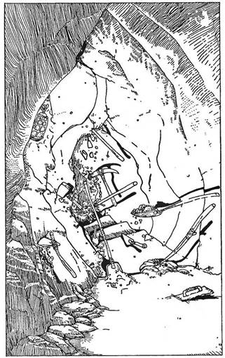
vadembert, amint nagyokat ugorva feléd rohan, miközben feje felett egy hatalmas csatabárdot forgat. Egy őrült Barbárral állsz szemben, és meg kell küzdened vele!
Barbár ÜGYESSÉG 7 ÉLETERŐ 6
Szemben az északi falon van egy ajtó, amelyen keresztül a Csata közben akár elmenekülhetsz. Lapozz a 189-re. Ha legyőzöd a Barbárt, lapozz a 273-ra.
9.
Meghökkensz, hogy a blöff milyen jól sikerült, és elhatározod, hogy továbbra is próbára teszed a szerencsédet. Ha akarod, megvizsgálhatod a Csontvázak szerszámait, vagy úgy tehetsz, mintha keresnél valamit, miközben átkutathatod a különféle asztalok, padok fiókjait. Ha a szerszámokra vagy kíváncsi, lapozz a 34-re, ha a fiókokat kutatod át, lapozz a 322-re. Zajt hallasz az északi ajtó mögül, és tudod, hogy sietned kell!
10.
Visszaérkeztél az elágazáshoz, és észak felé indulsz. Lapozz a 77-re.
11.
Követed a folyosót nyugat felé, amikor az egy kanyarral hirtelen dél felé fordul. Közvetlenül a forduló előtt megpillantasz egy útjelző táblát, melyen ez áll: Építési terület. Előtted egy lépcső vezet lefelé. Eddig még csak három lépcsőfok készült el. Egy csomó lapát, csákány és egyéb szerszám hever szanaszét a lépcsők mellett, de amint befordulsz a saroknál, hirtelen mozgásba lendülnek, és lázasan dolgoznak a lépcsőkön. Nézed, hogy a különféle szerszámok hogyan ásnak és kalapálnak, mintha láthatatlan munkások dolgoznának velük. Zümmögő énekszót hallasz, amely egyre erősödik, és felismered a Törpék indulóját: „Hej-hó, hej-hó, hej dalolni jó...“ Amint állsz és nézelődsz, elkezdesz kuncogni, a látvány egészen szórakoztató. Leülsz, és tovább figyelsz, sőt még beszélgetni is sikerül némelyik mágikus szerszámmal.
Míg pihensz, 2 ÉLETERŐ és 1 ÜGYESSÉG pontot szerzel. Azután visszamész a folyosóra az útkereszteződéshez, ahonnan elindulhatsz észak felé, lapozz a 366-ra, vagy déli irányba, lapozz a 250-re.
12.
Amint meghúzod az ajtónyitó gombot, fülsiketítő csengő-bongó hang tölti be a folyosót. Kétségbeesetten becsapod az ajtót, hogy a riasztó elhallgasson, de az már megtette a dolgát. Hallod a lábdobogást, amint feléd rohan valaki a folyosón. Lapozz a 161-re, hogy megtudd, kit haragítottál magadra. Jegyezd le a 12-es számot, hogy vissza tudjál térni ide, ha megvívtad csatádat. Ha legyőzted ezt a teremtményt, visszafordulhatsz az elágazáshoz, lapozz a 256-ra, vagy ha megpróbálod megnyomni az ajtónyitó gombot, lapozz a 364-re.
13.
Megsebesültél a fejeden, szédelegsz, amint lábra állsz. A négy férfi készen áll a harcra, és libasorban, fegyverrel a kezükben feléd közelednek. Tapogatózva mászol le a falon a déli kapu irányába, de ez még akkor is kockázatos, ha sikerül elérned oda. A lábad megcsúszik a laza kavicsokon, és a földre zuhansz. Még meg sem tudod vetni a lábad, mikor ellenfeleid rád vetik magukat. Lapozz a 282-re.
14.
Bár semmi jele, hogy titkos folyosók is lennének, egyszer csak lépések közeledő zaját hallod. Hogy megtudd, ki vagy mi az, meg kell küzdened vele. Lapozz a 161-re.
Jegyezd meg, hol állsz, hogy tudjad, hova kell visszatérned. Ha legyőzted a szörnyeteget, lapozz a 117-re.

15.
Amint ülsz a padon és falatozol, egyszer csak érzed, hogy teljesen kipihented magad, és a fájdalom is saját magától illant el testedből. Ez egy elvarázsolt pihenőhely. Visszakaphatsz 2 ÉLETERŐ pontot a szokásoson felül, de csak akkor, ha ezzel nem léped túl kezdeti ÉLETERŐ pontszámodat. 1 ÜGYESSÉG pontot is kaphatsz, de csak akkor, ha már elvesztettél belőlük. Amint készen állsz az út folytatására, menjél tovább a folyosón a 367-re.
16.
Miközben kirántod a kardodat, az Ogre meghall téged, és támadásba lendül.
Ogre ÜGYESSÉG 8 ÉLETERŐ 10
Ha legyőzted az Ogrét, lapozz az 50-re. A második forduló után akár elmenekülhetsz visszafelé a folyosón. Lapozz a 269-re.
17.
A cövek és a fakalapács segítségével (ha nincs nálad, ideiglenesen összetákolsz valamit) keresztet formálsz, azzal mész tovább a Vámpír felé, és sarokba kényszeríted. Sziszeg rád, és kapkod feléd, de nem jöhet közel hozzád. Mindazonáltal elég bonyolultnak látszik a feladat, hogy a cövekkel döfjed szíven.
Amint haladsz előre, megbotlasz és előrezuhansz. Szerencsére a cövek a kezedből egyenesen a Vámpír felé repül, és belehasít a sikoltozó szörnyeteg testébe. Tedd próbára Szerencséd! Ha szerencsés vagy, a cövek pontosan átütötte a Vámpír Szívét. Ha nincs szerencséd, csak súrolta a szörnyeteget (a sebesüléssel 3 pontot vesztett Életerejéből), dühösen rád támad, keresztülzavar a szobán a nyugati ajtó felé. Vagy elmenekülsz az ajtón át, lapozz a 380-ra, vagy tovább küzdesz vele, lapozz a 144-re. Ha szerencséd van és megölted, megkeresheted a Vámpír kincsét. Lapozz a 327-re.
18.
Továbbhaladsz a folyosón nyugat felé. Vagy ötven méter után az út észak felé kanyarodik. Két vagy három lépés után furcsa hangot hallasz, mintha valami szétmorzsolódna a lábad alatt. Tedd próbára Szerencséd! Ha szerencsés vagy, még sikerül gyorsan visszaugranod, mielőtt a verem kinyílna alattad. Ha nem volt szerencséd, túl lassú vagy, és belezuhansz a két méter mély verembe (1 ÉLETERŐ pontot elveszítesz ezzel). Ha szerencséd volt, jobban teszed, ha visszamész az elágazáshoz - lapozz a 261-re. Ha nem volt szerencséd, lapozz a 348-ra.
19.
Ezt a két gonosz teremtményt Goblinnak hívják. Egyenként támadnak rád.
ÜGYESSÉG ÉLETERŐ
Első Goblin 5 5
Második Goblin 5 6

Ha megölted a Goblinokat, lapozz a 317-re.
20.
A csetepaté elkezdődik. Te karddal, ők fejszével vannak felfegyverezve. Egyenként rontanak rád.
ÜGYESSÉG ÉLETERŐ
Első Törpe 7 4
Második Törpe 6 6
Harmadik Törpe 7 5
Negyedik Törpe 7 5
Ha győztél, lapozz a 376-ra. Ha a küzdelem rosszul alakul, elmenekülhetsz az ajtón keresztül, lapozz a 291-re. De ne feledkezz meg a Meneküléssel járó büntetésről sem!
21.
A halott Orkok testéből patakzó zöld vér undorító szagot áraszt. Megkerülöd a holttesteket, és megvizsgálod a ládát. Nem lesz könnyű kinyitni - erős tölgyfából és vasból készült, és szilárdan le van lakatolva. Megpróbálhatod lefeszíteni a lakatot a kardoddal, lapozz a 339-re, vagy otthagyod a ládát, és átmész a nyitott ajtón, lapozz a 293-ra.
22.
Körültapogatózol titkos ajtók után kutatva, de nem találsz egyet sem. Megállsz, hogy eltöprengj helyzeteden, amikor a mennyezetről gázsugár csap le rád sziszegve. Köhögsz és visszatartod lélegzeted, de nem tudod kitisztítani a tüdőd, térdre csuklasz. Forogni kezd veled a világ, és öntudatlan állapotban a padlóra zuhansz. Mikor magadhoz térsz és körülnézel, ismeretlen helyen találod magad. Lapozz a 4-re.
23.
A folyosót erős ajtó zárja el előtted, és meglepődve veszed észre, hogy az ajtó aljához egy bőrpántot szegeztek. Hallgatózol, de nem hallasz semmit. Ha belépsz a szobába, lapozz a 326-ra, ha visszafordulsz az elágazáshoz, lapozz a 229-re.
24.
Miután harmadszor is megsebesültél, érzed, hogy erőd fogytán van. Elvesztettél 1 ÜGYESSÉG pontot. Rádöbbensz, hogy ennek az ocsmány szörnyetegnek ez is a varázserejéhez tartozik, és érzed, amint végigfut a hátadon a hideg. Folytatod a harcot, vagy menekülsz? Ha Menekülni akarsz, fizesd meg a büntetést gyávaságodért, és rohanj az északi ajtón át. Lapozz a 360-ra. Ha maradsz, a küzdelem folytatódik. De mostantól számítva minden harmadik sebesülés, amit a bestiától kapsz, levon tőled 1 ÜGYESSÉG pontot. Ha legyőzted ellenfeledet, lapozz a 135-re.
25.
A festmények férfiportrékat ábrázolnak. Borsózik a hátad, amint a nyugati falon lévő festmény névtábláját olvasod. A kép Zagort, a Varázslót ábrázolja, akinek a kincsét hajszolod. Végigméred a portrét, és rádöbbensz, félelmetes ellenféllel kerültél szembe. Az az érzésed támad, mintha valaki figyelne, és észreveszed, hogy szúrós tekintetek követik minden lépésedet. Úgy érzed, a kép magához szív téged, és félni kezdesz. Elvesztettél 1 ÜGYESSÉG pontot. Van annyi bátorságod, hogy megpróbálj megküzdeni a Varázslóval? Ha nincs, azonnal távozol az északi ajtón keresztül, lapozz a 90-re, de ne feledd, ez is Menekülésnek számít. Ha akarod, átkutathatod a felszerelésed egy olyan fegyverért, amelyet a Varázsló ereje ellen fel tudsz használni. Lapozz a 340-re.
26.
Eszedbe jut Di Maggio kicsi, bőrkötéses könyve, és halkan elmondod a benne található varázsigét. Hangosan rákiáltasz a Sárkányra, mire ő feltápászkodik. Felkapja a fejét, és gyanakvóan bámul rád. Egy követ hajítasz a fejéhez, de a szikla visszapattan az orráról. A bestia mérgesen felhördül, nagyokat zihál, a torkából morajló hang hallatszik. A Sárkány nagyot fúj, és a fogai között egy újabb tűzgolyó kezd növekedni. Már felkészültél erre, és amikor a lángoló gömb felbukkan a szájában, rákiáltasz.
„Ekil Erif
Ekam Erif
Erif Erif
Di Maggio”
A tűzgolyó szétpukkad. A Sárkány kétségbeesett üvöltés közben próbálja lerázni orráról a lángokat. De a tüzet nem tudja eloltani, fájdalmában sikoltozva megfordul, és fejét rázva beleveti magát a sötétségbe. Lapozz a 371-re.

27.
Ez egy varázskard, és segíteni fog téged a küzdelemben. Amíg ezt a fegyvert használod, megnövelheted kezdeti ÜGYESSÉG pontjaidat 2-vel. Ugyancsak 2 pontot adhatsz jelenlegi Ügyességedhez is. Szerencséd is növekedett 2 ponttal, mivel rátaláltál erre a kardra. Dobd el régi kardodat. Lapozz a 319-re. Ha inkább meg akarod tartani saját régi fegyvered, hagyd az ÜGYESSÉG pontokat, ahogy vannak, és csak a Szerencséhez adj hozzá 2 pontot.
28.
A félelmetes Ogre holtan fekszik! Átkutatod a barlangját, de alig találsz valami használhatót, bár az övébe rejtett erszényben nyolc aranyat lelsz. Egy kicsit aggódsz ugyan a másik szék miatt, vajon kié lehet? Úgy döntesz, ugyanazon az úton hagyod el a barlangot, mint amin jöttél. Lapozz a 351-re. Győzelmedért 2 ÜGYESSÉG és 2 Szerencse pontot kapsz.
29.
A csizmáktól eltekintve, melyekre nincs szükséged, úgy tűnik, nincs semmi értékes a barlangban. Úgy határozol, visszafordulsz arra, amerről jöttél. Lapozz a 375-re.
30.
Egy meglazult kődarab elmozdul, ás láthatóvá tesz egy kötelet, mely a szikláról lóg le. Ha úgy érzed, okosabb nem hozzányúlni, visszafordulhatsz a keresztúthoz, lapozz a 267-re. Ha a kötelet meghúzod, lapozz a 67-re.
31.
Ha már megszerezted az ékkövet a Küklopsz szeméből, a Varázsló elé tartod. Félelmetes tekintete megváltozik, fájdalmat sugároz. Nyilvánvalóan érzi az ékkő hatalmát. Hirtelen a szemei elfehérednek, arckifejezése elgyengül. Megnő az önbizalmad, amint rádöbbensz, megnyerted az első igazi, komoly csatát. 2 ÜGYESSÉG pontot szereztél. Tedd az ékkövet a hátizsákodba, és hagyd el a szobát az északi ajtón keresztül. Lapozz a 90-re.
32.
Áthajítod a sajtot a szobán a Patkányok közé, és azok tülekedni kezdenek érte. Tépik, marják egymást az élelemért. A figyelmüket így elterelve keresztülmész a szobán, és kilépsz az északi falon lévő ajtón. Lapozz a 124-re. Jó szerencséd miatt adjál magadnak 2 Szerencse pontot.
33.
Az alvó teremtmény riadtan felébred. Felugrik és rád ront, de fegyvertelen. Kardoddal le tudnád győzni, de éles fogai gonoszul villognak. Elmenekülhetsz az ajtón keresztül - lapozz a 320-ra -‚ vagy megállsz, és megküzdesz a rád támadó Orkkal.
Ork ÜGYESSÉG 6 ÉLETERŐ 4
Ha legyőzted a szörnyet, elveheted a ládikát. Lapozz a 147-re.
34.
Átvizsgálod a szerszámokat, amelyeket találtál: egy fakalapács keményfa fejjel és egy színtiszta ezüstből készült véső. Megtarthatod bármelyiket, ha hajlandó vagy jelenlegi felszerelésed egy darabját itt hagyni helyette. Ha így döntesz, vezesd be a megfelelő változásokat a Felszerelési tárgyak rovatába. A zaj az északi ajtó felől egyre hangosabbá válik, te felpattansz, hogy kiderítsd, mi az. Lapozz a 96-ra.

35.
Amint belépsz a szobába, az ajtó becsapódik mögötted. Ahogy becsukódik, egy kattanás és sziszegés hallatszik. A mennyezet közepéből gázsugár csap ki, és a szobát fojtogató köd lepi el. Belélegzed, és köhögni kezdesz. Az ajtóra pillantasz, aztán a kulcsra. Visszamész az ajtóhoz, és gyorsan Elmenekülsz, lapozz a 136-ra, vagy visszatartod lélegzeted, és elrohansz a kulcsért, lapozz a 361-re.

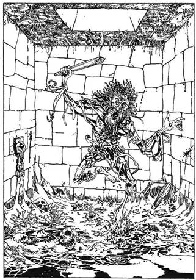
36.
Feltöröd a bezárt ajtót, és émelyítő bűz csapja meg az orrodat. A szobában a padlót csontok, rothadó növényzet és nyálkás iszap fedi. Egy rongyokba burkolózott, torzonborz hajú öregember rohan feléd rikoltozva. A szakálla hosszú és ősz, kezében egy régi, fából készült széklábat lóbál. Lehet, hogy őrült, de az is lehet, hogy ez valamiféle csapda! Ha rákiáltasz, és megpróbálod lecsillapítani, lapozz a 263-ra; ha kardot rántasz és nekitámadsz, lapozz a 353-ra.
37.
Az útkereszteződésnél állva elindulhatsz észak (lapozz a 366-ra), nyugat (lapozz a 11-re) vagy dél (lapozz a 277-re) felé.
38.
Kinyitod az ajtót, és rábukkansz a Farkasember éléskamrájára. Mindenféle csontok és rothadó húscafatok hevernek szanaszét. A szag émelyítő, de egy korsóban ecetben eltett tojásokat találsz, ami szinte ínyencségnek mondható. Ha magaddal viszed, két étkezésre elegendő lesz, és az Élelmiszerkészlethez plusz 2 pontot adhatsz hozzá. Lapozz a 66-ra, és távozz a déli ajtón át.
39.
Ellenfeled megdöbbenve veszi észre, hogy eltűntél előle, de azért szeméhez emeli kezét, és pillantásával alaposan átkutatja a szobát. Érzi jelenlétedet, de nem tudja megállapítani, pontosan hol vagy. Kihúzod kardod, és rátámadsz. Elrántja a fejét, és beleszimatol a levegőbe. Távolról kell megküzdened vele, mert ha kezét rád teszi, láthatatlanságod már nem jelent tovább előnyt.
Amíg láthatatlan maradsz, 2 pontot adhatsz hozzá kockával vetett Támadóerődhöz.
Minden sikeres támadásod 3 pontnyit pusztít a Varázsló Életerejéből, mivel ő nem láthat téged, és így nem tudja magát megfelelően védeni.
Minden alkalommal, ha sebet ejt rajtad, dobj egy kockával. Ha a szám páratlan, „átlagos sebesülés” ért, ha sikerült 6-ost dobnod, kivédted a csapást, és nem sebesültél meg, ha 2-t vagy 4-et dobsz, csak 1 pont értékű sebesülés ért.
Elhatározod, hogy megküzdesz vele.
Varázsló ÜGYESSÉG 11 ÉLETERŐ 18
Ha győztél, lapozz a 396-ra!
40.
A fülhasító zaj egyre erősebb és erősebb. A fájdalom elviselhetetlen. Ügyességedet a gyötrelmek 1 ponttal csökkentik. A sötétben tapogatózva egy falat keresel. Merre mész?
Nyugati irányba, lapozz a 355-re; északi irányba, lapozz a 265-re, vagy keleti irányba, lapozz a 181-re.

41.
Ő aztán valóban félelmetes ellenség. Egy hatalmas, ördögien erős Wight (rossz szellem) az. A küzdelem elkezdődik:
Wight ÜGYESSÉG 9 ÉLETERŐ 6
A kardoddal harcolsz. Ha már sikerült sebet ejtened rajta, lapozz a 310-re.
42.
Végül a folyosó egy hármas elágazásba torkollik. Mehetsz nyugatnak, lapozz a 257-re, vagy keletnek, lapozz a 113-ra.
43.
Egy észak-dél irányú elágazásnál vagy. Ha északnak mész, lapozz a 354-re, ha dél felé, lapozz az 52-re.
44.
A csata után levegőért kapkodsz, leülsz, hogy valamennyire összeszedd magad, és végre befejezd az evést, amit elkezdtél. Végül összecsomagolod a hátizsákodat, és átgázolsz a folyón. Lapozz a 399-re.
45.
A sajt eltalálja a portrét a falon, és lepattan róla. Gonosz kacagás hallatszik a falak mögül, és rájössz, hogy a Varázsló gúnyolódik veled. Úgy döntesz, hogy az északi ajtón át elhagyod a szobát. Lapozz a 90-re.
46.
Egy rövid kelet-nyugat irányú elágazásnál állsz, kelet felé egy ajtó zárja el az utat. Nyugat felé néhány méter után déli irányba kanyarodik az út. Ha átmész az ajtón, lapozz a 206-ra, ha a kanyar felé veszed utadat, lapozz a 4-re.
47.
A folyó közepén a híd elkezd ide-oda hintázni, le akar vetni magáról. Amint a korlátnak támaszkodsz, az azon nyomban eltörik. Dobj egy kockával! Ha 6-ost dobsz, belezuhansz az alattad kavargó folyóba, lapozz a 158-ra. Ha 1-től 5-ig dobsz, visszanyered egyensúlyodat, és továbbhaladsz. Lapozz a 298-ra.
48.
Egy kelet-nyugat irányú folyosón vagy. Ha keletre indulsz, a következő saroknál észak felé kell fordulnod. Ha erre indulsz, lapozz a 391-re, ha nyugatnak mész, lapozz a 60-ra.
49.
Az ajtó csikorogva nyílik a rozsdás sarokvasakon. A szoba sötét, szemed lassan megszokja a félhomályt, amint becsukod magad mögött az ajtót. Csoszogó hangot hallasz, de még mielőtt cselekedni tudnál, egy a fejedre mért csapástól elveszíted az eszméletedet. 2 ÉLETERŐ ponttal szegényebb lettél, lapozz a 122-re.
50.
A leütött teremtmény nagy zajjal a földre zuhan. Átkutatod az öltözetét, de nem találsz mást, csak egy kicsiny zacskót a nyakában. Ebben egy apró bronzkulcsot, melybe a 9-es számot nyomták. A kulcsot magaddal viheted, ha akarod. A barlangban semmi más érték nincs, így hát távozol, visszamész az elágazáshoz. Lapozz a 269-re.
51.
Felhajtod az Italt, és látod, amint a Troll arcán végigfut a döbbenet. Közeledik feléd, meg akar ragadni, de te oldalt lépsz, mire ő eredménytelenül a levegőbe markol. Kétségbeesetten csapkod, hogy a karmai közé kaparintson, de te könnyedén el tudod kerülni őt. Végül feladja a küzdelmet, és visszatér a kamrájába. Épp idejében, mivel már érzed, hogy kezdesz újra láthatóvá válni. Adj 2-t Szerencse pontjaidhoz! Mehetsz tovább előre a folyosón észak felé. Lapozz a 287-re.
52.
A keletre vezető folyosó végén egy észak-dél irányú elágazásnál állsz.
Mehetsz délnek, lapozz a 391-re.
Kereshetsz titkos átjárókat ugyanezen a déli úton, lapozz a 362-re.
Választhatod az északra menő utat, lapozz a 354-re.
Kutathatsz a titkos átjárók után az északi úton, lapozz a 234-re.
De tarthatsz keletnek is, lapozz a 291-re.
53.
Nekirontasz az ajtónak, és megpróbálod válladdal betaszítani. Dobj két kockával! Ha a dobott számok összege ÜGYESSÉG pontjaiddal azonos vagy annál kevesebb, az ajtó kinyílik. Lapozz a 155-re. Ha a szám nagyobb ÜGYESSÉG pontjaidnál, az ajtó megremeg, de nem mozdul, te viszont fájdalmadban összegörnyedsz, mert az ajtó nagyon kemény. Elveszítesz 1 ÉLETERŐ pontot, és menj tovább a folyosón. Lapozz a 300-ra.
54.
Egy észak-déli irányú átjáró északi végénél állsz egy ajtó előtt. Ha be akarsz menni rajta, lapozz a 179-re, ha délnek indulsz, lapozz a 308-ra.
55.
Dobj két kockával! Ha a dobott számok összege kevesebb vagy egyenlő Szerencse pontjaiddal ás kevesebb vagy egyenlő ÉLETERŐ pontjaiddal, akkor sikerül kitartanod és a tutajt átirányítanod az északi partra. Ne vonj le Szerencse pontjaidból! Biztonságosan megérkezel, de amint kilépsz a partra, a tutaj elsodródik, és átúszik a folyó déli partjára. Lapozz a 7-re.
Ha többet dobtál Szerencse vagy/és ÉLETERŐ pontjaidnál, felborulsz a tutajjal, és kezdhetsz visszaúszni a déli partra. Lapozz a 166-ra.
56.
Amint kardod beleesik a vízbe, egy bugyborékoló hang azt mondja: „Köszönöm!” Most már csak egyetlen dolgot tehetsz - le kell úsznod a folyó sodrával kelet felé. Beleveted magad a vízbe. Lapozz a 399-re.

57.
Amint belépsz a barlangba, hangos lépéseket hallasz a hátad mögött. A lépések erősen csikorognak a sziklás talajon. Meglapulsz a bejárat mellett egy sziklahasadékban. A lépések egyre hangosabbak, és egy Óriás Ogre-t pillantasz meg, amint belép a barlangba. Mára magassága is fenyegető, nagyobb két méternél, valami bőrből szabott szedett-vedett öltözéket visel. Rettenetes fabunkót tart magánál. Választhatsz:
Megtámadod, amint belép, lapozz a 16-ra.
Megpróbálsz kisurranni a barlangból úgy, hogy ne vegyen észre, lapozz a 2-re.
Megkísérled elvonni a figyelmét azzal, hogy valamit a barlang távoli sarkába hajítasz, lapozz a 119-re.
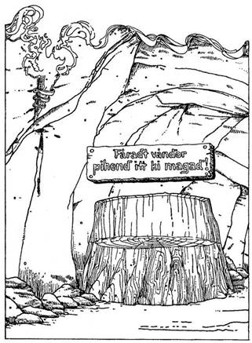
58.
Óvatosan mászol tovább az átjárón. Egy kis idő múltán az út élesen északnak kanyarodik. A fordulónál egy fatörzsből készült ülőke áll, felette egy tábla ezzel a felirattal: „Fáradt vándor, pihend itt ki magad!” Megállhatsz, és elfogyaszthatod Élelmiszerkészleted egy részét, lapozz a 15-re, vagy folytathatod utadat, lapozz a 367-re.
59.
Már jó ideje nyugat felé haladsz, aztán az út észak felé tesz egy hajtűkanyart, majd egyenesen déli irányba tart, végül egy háromirányú elágazáshoz ér, lapozz a 150-re.
60.
Továbbmész a folyosón, de hamar észreveszed, hogy az út nyugat felé hatalmas vasráccsal van lezárva. Vissza kell menned oda, ahonnan jöttél, lapozz a 48-ra.
61.
Amint épp átvizsgálod a barlangot, apró, rohanó léptek neszét hallod a hátad mögül. Megfordulsz, és szemben találod magad az Óriás Pók furcsa, fekete alakjával, ahogy épp feléd lopódzik. A Pók teste legalább egy méter átmérőjű, úgyhogy gyorsan kardot rántasz.
Óriás Pók ÜGYESSÉG 7 ÉLETERŐ 8
Ha győztél a küzdelem során, lapozz a 29-re. Két Forduló után Elmenekülhetsz az átjárón keresztül, ahonnan egy elágazáshoz érsz. Lapozz a 375-re.
62.
Folytatod az utadat kelet felé. Vagy harminc méter megtétele után az út délnek kanyarodik. Követed a kanyarulatot, s végül egy hatalmas páncélozott ajtó állja utadat. Ha ki akarod nyitni, lapozz a 6-ra, ha inkább visszamész a folyosóra, akkor bújj át a szűk hasadékon, és lapozz a 89-re.
63.
Ahogy haladsz előre, észreveszed, hogy a folyosó egyre szűkebb, egyre keskenyebb lesz. Egyszer csak megállsz, és abban a pillanatban mély, zengő kacagás harsan fel körülötted. Ha továbbmész, lapozz a 281-re, ha visszafordulsz, lapozz a 10-re.
64.
A Ghoul vidáman körültáncolja a testedet, majd a földön heverők mellé fektet. Hasra fordít, és fogait a hátsó feledbe mélyeszti. Ritkán kap táplálékul friss húst.
Kalandod itt véget ért.
65.
Amint rátámadsz az Ork Törzsfőnökre, szolgája felragad egy nehéz fabunkót, és beleveti magát a verekedésbe. De legnagyobb megdöbbenésedre rád támad! A hálátlan, hitvány féreg!
Látva ezt, visszamenekülhetsz a folyosóra, lapozz a 293-ra, vagy folytathatod a küzdelmet, lapozz a 372-re. Ha a Menekülés mellett döntesz, vond le a szokásos büntetőpontokat!
66.
Az ajtó kinyílik, és egy olyan úton találod magad, mely újra visszavezet a folyópartra. Tehát ismét a folyónál vagy. Ha megpróbálkozol átjutni azon az ajtón, mely a kőből faragott arc közepén nyílik, lapozz a 104-re, ha elindulsz lefelé azon az úton, amely a parton halad kelet felé, lapozz a 99-re.
67.
Meghúzod a kötelet, erre kinyílik egy csapóajtó, és láthatóvá tesz egy utat, amely az észak-déli folyosóhoz vezet. Ha visszafordulsz a keresztúthoz, lapozz a 267-re, ha átmész a titkos ajtón, lapozz a 177-re.
68.
A két Goblin kínzómester egymásra pillant, majd rád néz. Valamit karattyolnak egymás között, mutatják neked, hogy várj egy kicsit, míg ők elmennek a következő Törpéért, akire még nagyobb kínzás vár. Eltűnnek a szobából, és te levágod köteleiről a Törpét, aki, mint sejtetted, már meghalt. Úgy döntesz, legjobb, ha távozol, és folytatod utadat észak felé, felfelé. Lapozz a 303-ra.
69.
Az átjárótól nem messze a folyosó észak felé kanyarodik, és te egészen addig mész így, amíg egy újabb kereszteződéshez nem érsz. Ennél az elágazásnál egy sziklába vésett nyilat veszel észre, amely észak felé mutat, s elhatározod, megpróbálkozol ezzel az iránnyal. Lapozz a 244-re.
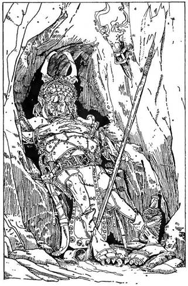
70.
Követed a nagy macskakövekkel bontott folyosót keletnek, azután északnak, majd újra keletnek, végül északnak fordulsz, míg végre egy elágazáshoz érsz. Lapozz a 267-re.
71.
Jobbra egy benyíló van az észak felé vezető úton. Óvatosan megközelíted a sarkon lévő őrhelyet, belesel, és egy különös, Goblin-szerű teremtményt pillantasz meg. amint bőrruhájában őrhelyén szunyókál. Megpróbálsz lábujjhegyen elsurranni mellette. Tedd próbára Szerencséd! Ha szerencsés vagy, nem ébred fel, hangosan horkol továbbra is, lapozz a 301-re. Ha balszerencsés vagy, a következő lépésnél valami megcsikordul a talpad alatt, és az őr szemei felpattannak, lapozz a 248-ra.
72.
Most már új páncélzatod is van, a tieddel nagyjából egyenértékű. Döntsd el, hogy a kettő közül melyiket tartod meg, a másikat dobd el, és lapozz a 319-re!
73.
Az üt előtted északi irányba halad. A sziklás talaj kezd homokossá válni, míg végül vastag homokrétegen lépdelsz. Észreveszed, hogy az út egyre szélesedik, és előtted egy folyó zúgását hallod. Addig gyalogolsz, míg egy hatalmas barlangban találod magad, amin egy folyó hömpölyög keresztül. Lapozz a 218-ra.
74.
Tedd próbára Szerencséd! Ha szerencsés vagy, meg tudod törni a rád szegeződő tekintetet, és felkészülsz a támadásra, lapozz a 279-re. Ha balszerencsés vagy, a hatalma alá kerülsz, és a parancsára eldobod a kardodat, lapozz a 118-ra.
75.
Visszaülsz, és pihensz egy kicsit a kimerítő küzdelem után. Elfogyaszthatod Élelmiszerkészleted egy részét is itt. Letéped az ékkövet a mozdulatlan szoborról. Jó súlyos, legalább ötven aranyat ér. Beleteszed a hátizsákodba. Amint átkutatod a szobát és a szobrot, észreveszed, hogy mellvértjének egyik darabja lötyög. Elfordítod, és egy kicsiny kulcsot találsz benne. Megvizsgálod, és észreveszed, hogy egy szám, a 111-es van rajta. Elmosolyodsz, a kulcsot is az ékkő mellé teszed a hátizsákba. Visszaindulsz az elágazáshoz. Minthogy igazán értékes leletre bukkantál, adj 3-at Szerencse pontjaidhoz, és lapozz a 93-ra!
76.
Újabb elágazáshoz érkeztél. Egy nyíl a falon északi irányba mutat, és te úgy döntesz, követed. Lapozz a 244-re.
77.
Néhány métert haladsz felfelé az átjárón, és egy elágazáshoz érkezel, ahol keleti és nyugati irányba egyaránt fordulhatsz. Az északi fal sziklái között van egy kis beszögellés, lepihenhetsz, és elfogyaszthatod Élelmiszerkészleted egy részét anélkül, hogy bárki észrevenne. Ha enni akarsz, egyél. Utána elindulhatsz keletnek, lapozz a 345-re, vagy nyugatnak, lapozz a 18-ra.
78.
Az út egy sarokvasakon függő tömör faajtónál ér véget. Ennél hallgatózva furcsa mormogást és konyhai edények zörgését hallod. Egy biztos: az ajtó mögött többen vannak. Ha be akarsz nyitni, lapozz a 159-re, ha inkább visszafordulsz, lapozz a 237-re.
79.
A folyosó előtted zsákutcába torkollik. Megpróbálhatsz titkos átjárókat keresni, lapozz a 137-re, de vissza is mehetsz az elágazáshoz, lapozz a 267-re.
80.
A kulcs pontosan beleillik a zárba, és nyitja az ajtót. Egy hatalmas csónaktárolóban találod magad. Különféle csónakok félig vagy teljesen elkészülve hevernek körös-körül. A mögötted lévő ajtón kívül van még egy bejárat az északi falban. Amint belépsz, a Csontvázak abbahagyják munkájukat, felemelik csontos nyakukon ülő fejüket, és rád tekintenek. Fapallókat és kalapácsokat kapnak fel, és feléd nyomulnak. Összesen öten vannak. Mit csinálsz?
Idegesen mosolyogva visszahátrálsz a folyosóra? Lapozz a 129-re.
Azt mondod, hogy csónakot vásárolni jöttél? Lapozz a 123-ra.
Azt állítod, te vagy az új főnökük, és visszaparancsolod őket munkájukhoz? Lapozz a 195-re.
Kirántod kardod, és felkészülsz a küzdelemre? Lapozz a 140-re.
81.
Zaj riaszt fel, és arra int, hogy sürgősen hagyd el a szobát. Az északi ajtóhoz mész, hogy megvizsgáljad. Lapozz a 205-re.
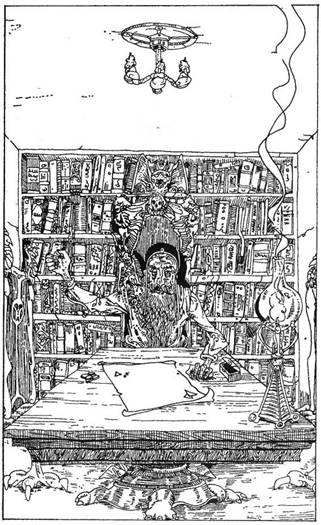
82.
Az ajtó kinyílik, és egy kicsi, büdös odú tárul a szemed elé. A szoba közepén egy roskatag faasztal éli, rajta égő gyertya, alatta egy kicsi faládika. A szoba egyik távoli sarkában egy szalmamatracon egy alacsony, zömök, csúnya bibircsókos arcú teremtmény alszik. Ugyanabból a fajtából való, akit alva találtál az őrhelyen. Nyilván ő az éjszakai szolgálatban lévő őr. Ha visszatérsz a folyosóra, és haladsz tovább észak felé, lapozz a 208-ra. Ha bekúszol a szobába, és megpróbálod megszerezni a ládikát, anélkül hogy felébresztenéd őrzőjét - Tedd próbára Szerencséd! Ha szerencsés vagy, nem ébred fel, lapozz a 147-re. Ha balszerencsés vagy, lapozz a 33-ra!
83.
Tedd próbára Szerencséd! Ha szerencsés vagy, ki tudsz jutni az északi ajtón keresztül - lapozz a 360-ra, ha balszerencséd volt, lapozz a 154-re!
84.
Az ajtó egy kicsi, kényelmesen berendezett szobába nyílik. Egy asztal, néhány szék és egy egész falat betöltő könyvespolc van benne. Az asztal mellett egy hosszú ősz szakállú öregember ül. Vállán egy kicsi szárnyas állat kuporog, nem nagyobb hat centiméternél. Két karja és két lába van, a bőre hamuszürke. Éles, pici fehér fogai vannak, szárnyait összefonja a háta mögött. Az Öreg nem szól semmit, amikor belépsz az ajtón, de azután int, hogy üljél le az asztalhoz. Két apró, fehér tárgyat dobál a kezei között. Mit csinálsz?
Leülsz, ahogy mutatta? Lapozz a 204-re.
Otthagyod a szobát, és visszafordulsz az elágazáshoz? Lapozz a 280-ra.
Kirántod a kardod, és megrohamozod? Lapozz a 377-re.
85.
Keresztúthoz érkeztél.
Ha északnak mész, lapozz a 106-ra.
Ha délnek mész, lapozz a 373-ra.
Ha keletnek mész, lapozz a 318-ra.
Ha nyugatnak mész, lapozz az 59-re.
86.
Egy hatalmas állkapocs tárul ki előtted. Mérete alapján Krokodil az, ami felé úszol. A bestia hatalmasat csap a farkával, és feléd siklik. Két Fordulóban kell megküzdened vele.
Krokodil ÜGYESSÉG 7 ÉLETERŐ 6
Már korábban észrevetted, hogy nem messze tőletek kavarog, buzog a víz. Most ez az örvénylés közeledni kezd felétek. A szemed sarkából látod csak ezt, és határoznod kell, mitévő légy. Ha úgy érzed, a Krokodil már a végét járja, és folytatni akarod a harcot, küzdj tovább. Ha győztél, lapozz a 259-re! Máskülönben továbbra is le kell kötnöd a bestia figyelmét, és csak az a halvány reményed marad, hogy az örvénylést okozó titokzatos lény segíteni fog rajtad valamiképp. Csapj össze még egy Fordulóban a Krokodillal, és lapozz a 350-re!
87.
Visszaérkeztél az elágazáshoz, és ez alkalommal északi irányba indulsz. Lapozz a 262-re.
88.
Újabb kicsiny kamrába lépsz be, amelynek közepén egy szökőkút van. A szökőkút maga nem túl különleges, egy kis kőből faragott hal, melynek a szájából vízsugár spriccel. Fából készült lapocska lóg rajta, egy üzenettel, amit a Goblinok nyelvén írtak, és amelyen te alig-alig beszélsz. Az első szót nem is érted, utána meg csak ennyi olvasható: „… nem sz… inni”. De te rettenetesen megszomjaztál. Ha iszol a vízből, lapozz a 216-ra, ha nem iszol, és távozol a kamrából az északi falon lévő ajtón át, lapozz a 384-re.
89.
Átmászol a nyíláson, és egy lefelé vezető szűk lépcsősor tetejénél találod magad. Óvatosan leereszkedsz a lépcsőkön. Lapozz a 286-ra.
90.
Az ajtó egy keskeny alagútba vezet, amely északi irányba halad. Néhány méter után az út előbb keletnek, utána északnak kanyarodik. A második kanyarnál egy kis bemélyedés van a sziklafalon. Megfelelő búvóhelynek látszik, az egyik szikla még kényelmes üléssel is szolgál. Itt elfogyaszthatod Élelmiszerkészleted egy részét. Pihenés után haladj tovább észak felé. Lapozz a 253-ra.
91.
Ha szerencsés vagy, nem derül ki, hogy csaltál. Tedd próbára Szerencséd - kedvező esetben elmehetsz a zsákmányoddal. Dobj két kockával, hogy megtudd, mennyi aranyat nyertél. Jegyezd fel a nyereményt a Kalandlapra, és lapozz a 131-re!
Ha balszerencsés vagy, a négy Törpe észreveszi, amint a kártyapakli aljáról osztasz, felkapják a szék mögé támasztott bárdjukat, és rád rontanak. Lapozz a 20-ra.

92.
Visszaértél a folyosón az elágazáshoz. Balra nézel, hogy meglásd a távoli homályba vesző barlangbejáratot, és egyenesen továbbmész. Lapozz a 71-re.
93.
Visszajutottál a kereszteződéshez, és ez alkalommal északi irányba indulsz. Lapozz a 8-ra.
94.
Mész tovább a folyosón, amely egyenesen délnek tart, azután nyugatnak kanyarodik. Néhány méter után egy hármas elágazáshoz érkezel. Ha útközben megpróbálkozol titkos átjárók keresésével, lapozz a 260-ra, ha egyenesen a kereszteződés felé haladsz, lapozz a 329-re.
95.
A fegyverek között semmi figyelemre méltót nem találsz, valójában egyik sem látszik jobbnak a kardodnál. Amint kutatsz a törmelékek között, északi irányból tompa puffanást hallasz, melyet egy olyan sikoly követ, hogy a hideg végigszalad tőle a hátadon. Az északi ajtóhoz rohansz, hogy kiderítsd, mi az. Lapozz a 205-re.

96.
Az ajtó egy rövid, talán tizenöt méter hosszú folyosóra nyílik. Mindkét végén egy-egy ajtó van. Rájössz, mi is volt a zaj. Újabb Csontvázak érkeznek. Karddal a kezében négy Csontváz rohan feléd. Úgy tűnik, még nem vettek észre, s te megpillantasz egy kis bemélyedést a falban, mely remek búvóhelynek látszik. Megpróbálsz elrejtőzni. Lapozz a 374-re.
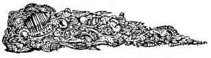

97.
Lépj be - hív egy hang belülről, s te besétálsz egy kicsi szobába, melynek bútorzatán (egy asztal, egy szék, polcok, szekrények stb.) látszik, hogy valaha jobb napokat is láttak. Tányérok, tálak, csészék és Öreg könyvek százai töltik meg a polcokat. Az egész rendetlenség közepén egy öregember üldögél, piszkos hálóköntösben, előre-hátra hintázik egy hintaszékben, miközben vidáman dünnyög valamit magában. Végigmér, de látszik rajta, tökéletesen meg van békélve a világgal. Rád köszön: - Jó napot! Mit csinálsz?
Megállsz elbeszélgetni az öreggel? Lapozz a 334-re.
Kardot rántasz, és rátámadsz? Lapozz a 247-re.
Úgy döntesz, nem vesztegeted rá az idődet, otthagyod, és mész tovább észak felé? Lapozz a 292-re.
98.
Amint bekúszol a szobába, egy hang dörren rád: - Légy üdvözölve, bajnok! Már vártam rád.
Megállsz, körülnézel és feltápászkodsz. A kis öregember teljesen megváltozott. Már nem olyan öreg, egyáltalán nem ősz, és tiszteletet parancsoló magasságúra nőtt. A szeme álnok és fekete, tekintete könyörtelen. Lapozz a 358-ra.
99.
Az út továbbhalad kelet felé. Valamivel előtted egy erősnek látszó ajtó zárja le a folyosót. Odalépsz, hogy megvizsgáld. Lapozz a 383-ra.
100.
Tétovázás nélkül beleegyeznek, hogy beszállj a játékba. Amint kártyáztok és beszélgettek, egészen feloldódnak, végül mindannyian nagyokat nevettek, miközben az egyik történet követi a másikat.
Teljesen ártalmatlannak látszanak. Ha tisztességesen akarsz játszani, lapozz a 346-ra, ha megpróbálsz csalni, lapozz a 91-re.
101.
Szerencsés hajításod váratlanul éri a Vámpírt, aki sikoltozik fájdalmában, ahogy a facövek átveri a szívét. Odaugrasz, és még mélyebbre nyomod testébe a cöveket. Halálsikolya egyre gyengül, élettelen teste a földre omlik. Lapozz a 327-re.
102.
Az ajtó kinyílik, nem volt bezárva. Az előtted lévő helyiség egy kis kínzókamrának látszik, a falakon körben különféle kínzóeszközök lógnak. A kamra közepén két apró, púpos hátú teremtmény pokoli módon kínoz egy Törpét, akit a csuklóinál fogva egy, a mennyezetből kiálló horogra akasztottak. A két púpos gonoszul döfködi, szurkálja kardjával a Törpét. Az áldozat még egy utolsót sikít, majd elhallgat, szemei lecsukódnak. Kínzói elégedetlenül morognak, és mérgesen rád pillantanak, mintha a te hibád lenne, hogy a Törpe kiszenvedett. Gyorsan kell cselekedned. Mit teszel?
Hirtelen becsapod az ajtót, és folytatod utadat a folyosón? Lapozz a 303-ra.
Kardot rántasz, és megküzdesz velük? Lapozz a 19-re.
A Törpéhez lépsz, és kardoddal te is beledöfsz a testébe, miközben, hogy becsapd a púpos kínzómestereket, gonoszul felkacagsz? Lapozz a 68-ra.
103.
Érzed, amint egy kő megmozdul, és mögötte egy fogantyút találsz. Ha meghúzod a kart, lapozz a 252-re, ha inkább visszamész a keresztúthoz, lapozz a 359-re.
104.
Egy rövid, szűk átjáróban találod magad, észak felé egy ajtó van előtted. Próbálkozz meg vele. Lapozz a 49-re.
105.
Átkutatod a hátizsákodat. Mi is van benne? Megpróbálhatod felhasználni a következő tárgyakat, de csak akkor, ha szerepelnek Felszerelési Tárgyaid között.
A Láthatatlanság Itala. Lapozz a 39-re.
A Küklopsz Szeme. Lapozz a 382-re.
Egy darab sajt. Lapozz a 368-ra.
Egy íj ezüstnyíllal. Lapozz a 194-re.
Egy Y alakú fapálcika. Lapozz a 215-re.
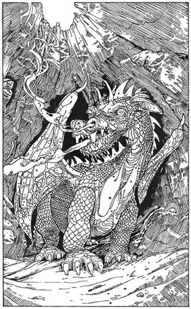
106.
A folyosó már jó ideje észak felé halad. Ha akarod, megpihenhetsz útközben, s elfogyaszthatod Élelmiszerkészleted egy adagját. Az út később nyugatra kanyarodik és szűkülni kezd. Egy kis sziklaboltívhez érsz, le kell görnyedned, hogy átférj alatta. A boltív másik oldalán megállsz, és körülnézel. Hatalmas barlangba jutottál, a vége távoli homályba vész. A barlang egy részét természetes fény világítja meg, mely egy, a tetején lévő lyukon sugárzik be. Semerre sem látsz kijáratot.
Amint körülvilágítasz lámpásoddal, morajlást hallasz. Fakó fény parázslik fel a sötétségben. Hirtelen egy lángcsóva csap fel a barlang mélyéből, hajszálnyira kerül el téged, és leperzseli a falon burjánzó mohákat. Földre veted magad, és felpillantasz. Egy hatalmas Sárkány oson a sötétségből feléd. Orrcimpáiból füst gomolyog. Pikkelyes vörös bőre olajosan fénylik. A bestia lehet vagy tizenöt méter hosszú! Hogyan akarod megtámadni a Sárkányt?
Kardot rántasz, és felkészülsz a támadásra? Lapozz a 152-re.
Hirtelen végiggondolod, mi mást is tehetnél a Sárkány ellen? Lapozz a 126-ra.
107.
Lábujjhegyen végiglopódzol a szobán, aztán fel egy szűk lépcsőn. Ez egy folyosóra vezet. Na, ezt könnyen megúsztam! - gondolod, majd töprengeni kezdesz, nem lett volna-e érdemes átkutatni a testeket. Visszamehetsz, hogy ezt megtedd - kezdd a harmadikkal -‚ lapozz a 148-ra, de tovább is indulhatsz, lapozz a 197-re.
108.
Amikor a lábad hozzáér az első kéz formájú csempéhez, érzed, hogy a bokádat szinte satuba szorították, s ahogy letekintesz, megpillantasz egy kísértetiesen fehér kezet, amely megmarkolta a lábad. Küzdesz, hogy visszanyerjed egyensúlyodat, erőfeszítésedet végül is siker koronázza. Legnagyobb rémületedre a padlón rengeteg kéz formájú csempe van. Az ajtóhoz vezető úton a padlóból mindenütt szellemkezek nyúlnak feléd, kapkodnak a levegőbe. Kardot rántasz, és a kezekre sújtasz. Vívd meg a csatádat!
Kéz ÜGYESSÉG 6 ÉLETERŐ 4
Ha nyertél, lapozz a 185-re!
109.
Sima, ízetlen folyadék, de amint iszod, szinte izzani kezdesz tőle. Fantasztikusan jól érzed magad, s közben mintha egy kicsit becsípnél. Önbizalmad megnő, kimerültséged pedig eltűnik. Az üveg Szentelt Vizet tartalmaz, melyet Kaynlesh-Ma főpap áldott meg. Visszaállította Életerődet, majdnem teljesen. ÉLETERŐ pontjaidat növeld meg annyival, hogy kezdeti ÉLETERŐ pontszámodnál 2-vel legyen kevesebb. (Ha jelenlegi pontszámod ennél magasabb, hagyd úgy, hisz így is elég erős vagy
Adj mostani ÜGYESSÉG pontjaidhoz annyit, hogy a kezdetinél csak 1 ponttal legyen kevesebb. Ezért az igazán szerencsés leletért Szerencse pontjaidhoz is hozzáadhatsz 4-et.
Ha már elolvastad a pergament, vagy az egyáltalán nem érdekel, elhagyhatod a szobát északi irányban, lapozz a 120-ra, ha még nem láttad, és meg akarod vizsgálni, lapozz a 212-re.
110.
8 aranypénzzel lettél gazdagabb. További 2 aranyat találsz a csizmákban, amelyeket végszükségre tett félre. Lapozz a 319-re! Az aranyakat jegyezd fel a Kalandlapon!
111.
Nem tudod megbékíteni. Amint szorongva átvágsz a szobán, odakiált a kutyájának. Lapozz a 249-re.
112.
Semmit sem látsz a szobában, ami a küzdelem során a hasznodra lehetne. Mit teszel?
Kirántod a kardodat, és fogcsikorgatva támadásba lendülsz? Lapozz a 142-re.
Átkutatod a hátizsákodat valami használható fegyverért? Lapozz a 105-re.
113.
A folyosó újabb elágazáshoz érkezett. Mehetsz észak felé, lapozz a 285-re, vagy folytathatod utadat keletnek, lapozz a 78-ra.
114.
Az út dél felé halad, azután keletnek fordul, végül egy kereszteződésnél véget ér. Lapozz a 359-re.
115.
A két szegény ördög, akiknek a holtteste a lábad előtt hever, szinte megkönnyebbültnek látszik, hogy letehette végre az élet terhét. Amint letekintesz rájuk, úgy érzed, nem te vagy az egyetlen, aki tud a halálukról. Körülnézel a szobában, és ha akarod:
Megvizsgálhatod a szerteszét heverő fegyvereket. Lapozz a 95-re.
Odamész az északkeleti sarokban heverő holttesthez. Lapozz a 313-ra.
Átvizsgálod a hordókat. Lapozz a 330-ra.
116.
Két részeg Orkkal nézel szembe. Belépéseddel nyilvánvalóan felriasztottad őket, s amilyen gyorsan csak tudnak, a fegyverük után kapnak. Egymás után kell rájuk támadnod. Amikor kockavetéssel meghatározod Támadóerődet, részegségük miatt minden Fordulóban hozzáadhatsz 1-1 pontot a dobott számhoz.
ÜGYESSÉG ÉLETERŐ
Első Ork 5 4
Második Ork 5 5
Ha győztél a küzdelemben, lapozz a 378-ra, ha közben el akarsz menekülni, lapozz a 42-re.
117.
Egy kelet-nyugat irányú átjáróban vagy. Ha keletnek fordulsz, lapozz a 354-re, ha inkább nyugatnak mész, lapozz a 308-ra.
118.
Ahogy megközelíted, felemelkedik koporsójából, szétnyitja köpenyét, és alávon. Életed utolsó emlékeként éles fájdalom hasít beléd, amint hegyes fogait a nyakadba mélyeszti.
Soha nem lett volna szabad a Vámpír szemébe nézned…
119.
Kinyitod a hálózsákodat, és átkutatod, hátha találsz valamit, amit átdobhatsz a barlang túlsó oldalára. Nézd végig a Felszerelési Tárgyaidat, válassz ki valamit közülük, amit átdobsz, és húzd ki a listáról. Ha más nincs, egy aranypénzt kell áthajítanod. Átdobod a kiválasztott tárgyat, ami nagyot csattanva földet ér. Az Ogre a zaj felé pillant, majd odamegy és körülnéz. Közben ki tudsz mászni, le a folyosóra, vissza az elágazáshoz. Lapozz a 269-re.
120.
Elhagyod a termet, lesétálsz egy rövid szakaszon, odaérsz egy felfelé kanyarodó lépcsőhöz. Megmászod a lépcsőket, és egy átjáróhoz érkezel. Lapozz a 197-re.
121.
A folyosó néhány méteren keresztül keletnek tart, azután délnek kanyarodik, majd újra keletnek, és hirtelen véget ér. Ha átvizsgálod a zsákutcát, ahova kerültél, lapozz a 103-ra, ha visszamész az elágazáshoz, lapozz a 359-re.
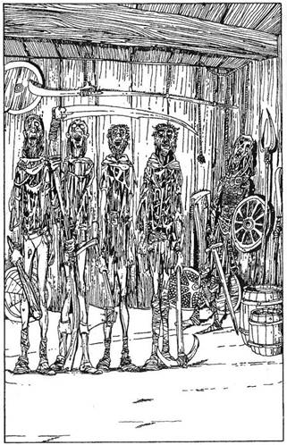
122.
Fájdalomtól lüktető fejjel térsz magadhoz, és körülnézel. A szoba körülbelül nyolc négyzetméteres, déli és északi oldalán egy-egy ajtó van. A szoba délnyugati sarkában heversz. A szoba közepén négy férfi áll mozdulatlanul. Legalábbis férfiaknak tűnnek. Bőrük zöldesszürke. Ruhájuk cafatokra tépve lóg, és mindnyájan kifejezéstelen arccal a mennyezetet bámulják. Az első egy dorongot, a második egy kaszát, a harmadik egy bárdot, a negyedik egy csákányt tart a kezében. Egyáltalán nem vesznek tudomást rólad.
A szobában körös-körül különféle mezei munkához használatos szerszám (vasvillák, cséphadarók, kihegyezett karók stb.), egy-két pajzs és néhány hordó található. Az északkeleti sarokban egy emberi test hever, egyik kezében kard, a másikban pajzs. Megtapogatod a fejedet, sebeket keresve, de rájössz, egyetlen sebből sem vérzel. De amint a kezedet megmozdítod, a szoba közepén álldogáló különös teremtmények feléd fordítják a tekintetüket. Mit teszel?
Megpróbálsz beszélni velük? Lapozz a 268-ra.
Talpra ugrasz, és kardoddal rájuk támadsz? Lapozz a 282-re.
Kúszva menekülsz a déli ajtón keresztül? Lapozz a 13-ra.
123.
Elhiszik-e neked, hogy valóban csónakot akarsz vásárolni? A Csontvázak meglehetősen együgyűek, úgyhogy dobj egy kockával. Ha 1-et, 2-t vagy 3-at dobsz, hisznek neked, és mindannyian kirohannak az északi ajtón keresztül, egyedül hagyva téged a Csónakházban. Adj 2-t a Szerencse pontjaidhoz, és lapozz a 184-re!
Ha 4-et vagy 5-öt dobsz, az azt jelenti, nem bizonyosak a dologban. Maguk közül kettőt elküldenek (az északi ajtón át távoznak), de a másik három kezdetleges fegyverével a kezében éberen figyel. Lapozz a 164-re.
Ha 6-ost dobsz, az azt jelenti, egyáltalán nem hisznek neked, és egyre közelednek feléd. Lapozz a 140-re.
124.
Az ajtó egy széles folyosóra nyílik, amelyet követve nemsokára egy elágazáshoz érsz. Innen mehetsz északnak, lapozz a 138-ra, vagy keletnek, lapozz a 76-ra.
125.
Felemeled a kötelet. Egyszerű, közönséges kötélnek látszik. Úgy tűnik, még hasznát veheted. Kinyitod a hátizsákodat, hogy betedd, amikor hirtelen életre kel a kezedben. Felfelé kígyózik a karodon, megpróbál rátekeredni a nyakadra. Igyekszel elvágni a kardoddal, mielőtt rászorulna a gégédre. Tedd próbára Szerencséd! Ha szerencsés vagy, el tudod vágni a kötelet, amely a földre hullik. Ha balszerencsés vagy, a hurok megszorul a nyakadon, 1 ÉLETERŐ pontot elveszítesz. Újra meg újra Tedd próbára Szerencséd, próbáld meg ismét elvágni a kötelet, ha nem sikerül, próbálkozz újra és újra. Valahányszor kudarcot vallasz, elveszítesz 1 ÉLETERŐ és 1 Szerencse pontot. Ha végül legyőzöd a kötelet, továbbmehetsz az északi ajtón keresztül. Lapoz a 73-ra.
126.
„Farrigo Di Maggio” neve jelent valamit a számodra? Mert ha nem, meg kell küzdened a Sárkánnyal, lapozz a 152-re. Ha igen, lapozz a 26-ra!
127.
Nem veszi félvállról fenyegetéseidet. Amint alkudoztok, egyre mérgesebb lesz, észreveszed, hogy kezd átalakulni. Szemed előtt egyenesedik fel, és egész testi mivoltában nőni kezd. Az arcán és a karján nőni kezd a szőr. Fogai élessé és hegyessé válnak. Gyorsan kell döntened. Ha felkínálsz neki öt aranyat, hogy lecsillapítsd, lapozz a 272-re, ha felkészülsz a támadásra, lapozz a 188-ra.

128.
Mélységes, morajló hangot hallasz, és a föld megremeg a lábad alatt. A vasrács hangosan csikorogva lassan felemelkedik. Most már átmehetsz az elágazáshoz. Ha nyugatnak indulsz, lapozz a 210-re, ha inkább keletnek fordulsz, lapozz az 58-ra.

129.
Vissza jutottál a folyópartra, és ügy döntesz, megpróbálkozol az ajtóval, mely a sziklából faragott arc közepén nyílik. Lapozz a 104-re.

130.
Az Öreg megkérdezi, mennyi legyen a tét. Fogadhatsz egy és húsz arany közötti összegben (de nem játszhatsz többel, mint amennyi tényleg van nálad). Odalöki neked a fehér kockákat, amikkel játszadozott, és felszólít, hogy dobj. Dobj mindkét kockával, először magadnak, azután az Öregnek. Ha a te összeged nagyobb. mint az övé, elnyerted a tétet, Ha az övé a magasabb, vesztettél. Folytathatod a játékot egészen addig, míg van nálad aranypénz, majd az ajtón keresztül visszamehetsz az elágazáshoz. Ha nyertél, adj 2 pontot Ügyesség, ÉLETERŐ és Szerencse pontjaidhoz. Lapozz a 280-ra.
131.
Különféle dolgokról beszélgettek, és úgy tűnik, igyekeznek nagyon barátságosak lenni veled. Magányosan élnek a labirintusban a sok gonosz teremtmény között, és örülnek, ha olyan valakivel beszélgethetnek, aki a törvényes külvilágból érkezik. Közlik, hogy Zagor Útvesztőjében vagy, és az egyetlen kiút, ha továbbmész, egyre mélyebbre a Labirintusban. Azt mondják, a legbiztosabb út, amint elhagyod a szobát, ha jobbra fordulsz, azután megint jobbra, balra, azután egyenesen, azután... És itt egy kicsit elbizonytalanodva bevallják, hogy nem teljesen biztosak a dologban.
Ha akarod, elfogyaszthatsz itt egy adagnyit Élelmiszerkészletedből, de ebben az esetben meg kell osztanod velük táplálékodat, és így a szokásos ÉLETERŐ pontoknak csak a felét kapod. Végül elköszönsz tőlük, és távozol. Lapozz a 291-re.
132.
Egyszerű, fából készített pajzs. Ha akarod, megtarthatod, ha nem, dobd el. Lapozz a 319-re.
133.
Egy észak-dél irányú folyosón vagy, amely zsákutcában végződik. Épp a sziklafalat tanulmányozod, hogy van-e rajta valami érdekes, amikor egy meglazult szikladarab felülről a fejedre zuhan. Bár az ütés nem volt különösebben erős, érzed, hogy szédülsz. Igyekszel az öntudatodnál maradni, de képtelen vagy rá. A földre zuhansz. Amikor kinyitod a szemedet, egy elágazásnál találod magad. Lapozz az 52-re.


134.
A szoba lakatlan, és úgy tűnik, nincs másik kijárata. A padló közepén egy asztal áll, rajta két sisak hever. Az egyik bronzból van, a másik vasból. Mindkettő körülbelül a te méreted. Felpróbálod, vagy inkább nem vállalod a kockázatot?
Felpróbálod a bronzsisakot? Lapozz a 202-re.
Felpróbálod a vassisakot? Lapozz a 325-re.
Visszatérsz az elágazáshoz? Lapozz a 87-re.
135.
A Wight (rossz szellem) a szoba sarkában roskad össze. Odamész az asztalhoz, és kinyitod a ládikát. Tizennyolc aranypénz van benne. Magaddal viheted, ha akarod, de vezesd rá a Kalandlapra. Adj 2-t Szerencse pontjaidhoz, mivel legyőzted ezt a teremtményt is. Pihenj egy kicsit, és egyél valamit. Ha készen vagy, az északi ajtón keresztül elhagyhatod a szobát. Lapozz a 360-ra.
136.
Odaérsz az ajtóhoz, megbirkózol a zárral, és kitárod az ajtót. Felkiáltasz, becsapod magad mögött, és nagyokat lélegezve visszafordulsz az elágazáshoz. Lapozz a 229-re.
137.
Nem találsz egyetlen titkos átjárót sem, de amint megnyomod a falat, egy kattanást hallasz. Szédelegni kezdesz, és a földre zuhansz. Amikor magadhoz térsz, ismeretlen helyen találod magad. Lapozz a 354-re!
138.
A folyosó szélesedni kezd, és észreveszed, hogy egy hatalmas barlang felé közeledsz. Hangok szűrődnek feléd, úgyhogy óvatosan haladsz tovább. Amint közeledsz, egyszer csak egy óriási alakot pillantasz meg a távolban. Elfog a félelem, amint ráébredsz, hogy ez a túlméretezett emberszerűség legalább három méter magas! Bőrből készült tunikát visel, és pillanatnyilag teljesen lefoglalja az asztalon lévő vacsorája.
A barlang legalább 100 méter átmérőjű, nyilván ez az Óriás otthona. Az egyik falnál hatalmas asztal éli, mellette két szék, az egyiken ül a monstrum. Szemmel láthatólag annyira leköti az étkezés (egy hatalmas malac), hogy aligha vesz észre. A barlang másik végében megpillantod a szalmazsákját, meg egy nagy, szőrös állatbőrt (nyilván a takarója) és egy hatalmas kőfejű kalapácsot, amelyet valószínűleg meg sem bírnál mozdítani. A barlang egyik sarkában tűz lobog, felette a mennyezeten rés tátong. Úgy tűnik, nincs más kiút a barlangból. Ha megküzdesz ezzel a kegyetlen Óriással, lapozz a 163-ra, ha visszatérsz az elágazáshoz, lapozz a 351-re.
139.
Kalandozásod során különféle kulcsokra akadtál, néhányat magadhoz vettél belőlük. Most három kulcsot is kipróbálhatsz, hogy nyitják-e a ládán lévő zárakat.
Mindegyik kulcs számmal van ellátva. Hogy megtudd, nálad vannak-e az igazi kulcsok, add össze a rajtuk lévő számokat. Lapozz ahhoz a fejezetszámhoz, amennyit a számok összege ad, és megtudod, jó kulcsaid vannak-e.
Ha nincs nálad három megszámozott kulcs, kalandod itt véget ér. Leülsz a ládára, és sírva fakadsz, hogy újra át kell kutatnod az egész hegyet a kulcsokért.
140.
A Csontvázak közelednek, és te visszahátrálsz az ajtóhoz. A Vezér halad elöl, mögötte ketten, utánuk megint ketten jönnek. Úgy döntesz, megküzdesz velük. Először a Vezérrel kell összecsapnod.
A Csontvázak Vezére ÜGYESSÉG 7 ÉLETERŐ 5
Ha győztél, megmérkőzhetsz a párokkal is. Ezek tagjai külön-külön támadnak rád, és neked kell eldöntened, melyikkel mérkőzöl meg előbb. A kiválasztott Csontvázzal a szokott módon csapsz össze. A másodikkal szemben dobókockával a szokásos módon meghatározod a Támadóerődet. Ha a tied a nagyobb, még akkor sem tudod megsebesíteni, egyszerűen vedd úgy, hogy kivédted a csapását. Ha az ő Támadóereje a nagyobb, akkor természetesen megsebzett téged.
ÜGYESSÉG ÉLETERŐ
Első Páros Csontváz A 6 5
Csontváz B 6 6
Második Páros Csontváz A 5 6
Csontváz B 5 5
Ha győztél, lapozz a 395-re!
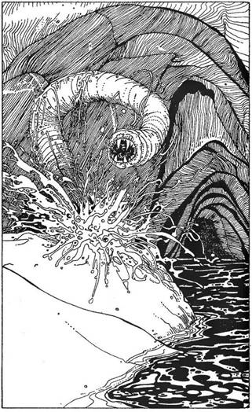
141.
Amint az Öreg megtudja, hogy a kincset keresed, mérges lesz, és azt mondja, távozz tőle, neki semmi köze kincsvadászokhoz. Kutyája is érzi dühét, és fenyegetően vicsorog rád. Ha elmosolyodsz, elköszönsz tőle, és távozol a déli ajtón keresztül, lapozz a 66-ra, ha ott maradsz és megpróbálod lecsillapítani, lapozz a 111-re.
142.
Zúgó hangon felkiált: - Szegény bolond! Valóban azt hitted, hogy hitvány fegyvereddel szembeszegülhetsz az én erőmmel? (Te közben eltökélten támadsz.) Ha verekedni akarsz, hát verekedjünk meg, Idegen, de számodra ez lesz az utolsó küzdelem! - és ezekkel a szavakkal eltűnik, majd megjelenik a hátad mögött. Megperdülsz, hogy szembekerülj vele, és a harc elkezdődik. De ez a csata élethalálharc. Most nem lehet elmenekülni.
Varázsló ÜGYESSÉG 11 ÉLETERŐ 18
Ha győztél, lapozz a 396-ra!
143.
Letelepszel a parti homokra. Amint az elemózsiád készíted, néhány méterre balra tőled valami megmozdul a homokban. A homok mozgása fokozódik, felpattansz, kardod már a markodban. Hirtelen egy hatalmas, cső alakú fej bújik ki a felszínre, tekergőzik néhányat a levegőben, és megérzi a szagodat. Az Óriás Homokhernyó puha, szelvényekre osztott teste felágaskodik és feléd hajlik. Amint lecsap rád, ott, ahol valószínűleg a feje van, egy nyílás tárul fel, tele rövid, tüskeszerű fogakkal. Meg kell küzdened ezzel a lénnyel is.
Óriás Homokhernyó ÜGYESSÉG 7 ÉLETERŐ 7
Ha győztél, lapozz a 44-re!
Ha Menekülni akarsz, a harmadik Forduló után megteheted, folyóba veted magad, és úszol lefele az árral - lapozz a 399-re, de ebben az esetben elveszítettél egy adag Élelmet, amit éppen meg akartál enni.
144.
A lény rád mered. Pillantásával elkapja tekinteted, és érzed, hogy mostantól fogva képtelen vagy bármit is csinálni. Hívólag int a fejével. Lassan közeledsz feléje. Rád parancsol, hogy dobd el a cöveket. Amint lenézel a cövekre, hirtelen hatalmas akaraterőt érzel magadban. Közvetlen közelről a szörny felé hajítod a cöveket.
Tedd próbára Szerencséd! Ha szerencsés vagy, lapozz a 101-re, ha balszerencse üldöz, lapozz a 217-re!
145.
Míg a Kígyóval harcoltál, a doboz a földre esett, és egy bronzszínű kulcs hullott ki belőle. A kulcsra a 99-es számot vésték. Magaddal viheted a kulcsot (jegyezd be a Felszerelési Tárgyak rovatba), és indulhatsz tovább. Szerencse pontjaidhoz adjál 1-et, és lapozz a 363-ra!
146.
Nem találsz titkos átjárókat. Visszamész a kereszteződéshez, és folytathatod utadat vagy északnak, lapozz a 366-ra, vagy nyugatnak, lapozz a 11-re.
147.
Kilépsz a szobából, és a folyosón kinyitod a ládikát. Egyetlen aranypénzt találsz benne, és egy kisegeret, nyilván ez volt ellenfeled kedvenc háziállata. Megtartod az aranyat és szabadon ereszted az egeret, amely apró léptekkel elrohan. 2 Szerencse pontot kaptál, és lapozz a 208-ra!
148.
Átkutatod a testet, és megpróbálsz nem rátekinteni oszlásnak induló, szürke arcára. Hátraugrasz, amint a holttest hirtelen rád mereszti szemét. Épp az utolsó pillanatban kerülöd el a gonosz vágást, amit hosszú, éles körmei hasítottak volna rajtad. Felpattan, és megjelenik arcán a szadisták jellegzetes torz mosolya. Lapozz a 230-ra.
149.
Amint az élő freskókat bámulod, nem is figyelsz arra, hogy a gyertya milyen gyorsan ég. Hirtelen lobban egyet, és kialszik. Újra hallod a fülsértő sikolyokat, és a hangok elviselhetetlen magasságig emelkednek. Térdre hullasz, két kézzel befogod füledet, és a fal felé kúszol. Melyikhez?
A keleti falhoz? Lapozz a 181-re.
Az északi falhoz? Lapozz a 265-re.
A nyugati falhoz? Lapozz a 355-re.
150.
Egy elágazásnál vagy, az út háromfelé vezet.
Északnak fordulsz. Lapozz a 222-re.
Keletnek indulsz. Lapozz a 297-re.
Délre tartasz. Lapozz a 133-ra.
151.
Az örvénylő vízben végre földet ér a lábad. Néhány méternyire az északi parttól egy hüllő baljóslatú szempárját pillantod meg a víz felszínén. Téged figyel! Te pedig egyenesen arra úszol. Ha úgy döntesz, hogy nem akarsz megismerkedni a vészjósló szempár tulajdonosával, megfordulsz, és minden erődet összeszedve visszaúszol a déli partra. Kimerülten érkezel, elvesztettél 1 ÉLETERŐ pontot, lapozz a 218-ra. Ha akarod, szembenézhetsz a bestiával, lapozz a 86-ra, vagy megpróbálhatod kikerülni, de akkor közelebb sodródsz az örvényléshez, lapozz a 158-ra.
152.
Küzdjél meg a Sárkánnyal!
Sárkány ÜGYESSÉG 10 ÉLETERŐ 12
Ha győztél, lapozz a 371-re!

153.
Ahogy két kardod az övedbe dugod, az újonnan szerzett megelevenedik, és elkezd külön életet élni. Megvágja a lábadat (1 ÉLETERŐ pontot vesztettél), és amint kihúzod, megpuhul a kezedben. Mivel így már nincs rá szükséged, a folyóba veted. Úgy látszik, nem tehetsz mást, a folyó áramlásával együtt keleti irányba kell úsznod. A vízbe veted magad, és úszni kezdesz. Lapozz a 399-re.

154.
Megmozdulsz, erre a teremtmény szeme rögtön felpattan. Rád bámul, és lassan feltápászkodik. Nagyokat szuszogva feléd lopakodik. Nem kerülheted el a harcot. Lapozz a 41-re.
155.
Az ajtó hosszában kettészakad, szétfeszegeted a léceket, hogy bejuss. Az egyik falon egy fáklya ég, és egy kis fegyverraktárat világít meg lángja. A raktárban kardok, pajzsok, sisakok, tőrök, mellvértek és hasonlók hevernek. Átvizsgálod a fegyverzetet, de semmi olyat sem találsz, ami felül tudná múlni saját kardodat. De azért egy kör alakú vaspajzson megakad a tekinteted, talán a közepén lévő arany félhold miatt. Felemeled, kipróbálod, hogyan áll a kezedben. Ha magaddal akarod vinni, megteheted, segítségedre lehet a csatában, ki tudja védeni azokat a sebeket, amelyeket különféle lények ejtenek rajtad. A továbbiakban, ha egy
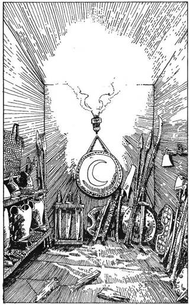
teremtmény megsebez - miközben ezt a pajzsot használod -‚ dobhatsz egy kockával. Ha 6-ost dobsz, a lény a szokásos 2 pont helyett csak 1 pontnyi sebet ejtett rajtad. Ha valami egyéb ok miatt az ellenfeled csak 1 pontos sebet okoz neked, szerencsés 6-os dobásod ezt semlegesíti, nem sérültél meg. Mivel azonban a pajzs nehéz, Felszerelésed egy tárgyát itt kell hagynod helyette (vezesd be a változást a Kalandlapra). Távozol a szobából, és továbbhaladsz a folyosón. Lapozz a 300-ra.
156.
Megpróbálod válladdal betaszítani az ajtót. Dobj két kockával! Ha a dobott számok összege kisebb vagy egyenlő ÜGYESSÉG pontszámoddal, sikerült betörnöd, lapozz a 343-ra. Ha a szám nagyobb ÜGYESSÉG pontjaidnál, megdörzsölöd felhorzsolódott válladat, és úgy döntesz, nem próbálkozol többet. Lapozz a 92-re, és így visszaérkezel az elágazáshoz.
157.
Az ajtó egy kelet-nyugati irányú átjáróba nyílik, amely néhány méter után észak felé kanyarodik. Ha erre indulsz el, lapozz a 4-re, ha nem akarsz keresztülmenni az ajtón, lapozz a 329-re.
158.
A víz szinte buzog körülötted, mintha egy láthatatlan kéz láthatatlan kavicsokat dobálna bele. Nagyot nyelsz - ezek bizony Piranhák, és már érzed is, amint éles fogaik a testedbe hasítanak. A lábaddal rugdalod őket, közéjük suhintasz a kardoddal, hogy távol tartsd őket, míg a déli partra nem érsz. (A piranhákat tekintsd külön teremtménynek!)
Piranhák ÜGYESSÉG 5 ÉLETERŐ 5
Küzdj meg velük!
Ha győztél, sikerül kievickélni a vízből, partra rogysz pihenni. Elfogyaszthatod élelmiszerkészleted egy részét is, utána lapozz a 218-ra!
159.
Az ajtó egy hatalmas terembe nyílik, a terem valószínűleg a már előbb látott bibircsókos arcú teremtmények ebédlője. A nagy asztal körül öt Ork ül, iszogatnak, és tányérjukból patkánybendőből készült levest szürcsölgetnek. Hevesen vitatkoznak azon, hogy ki szopogathatja majd le a hatalmas üstben benn hagyott patkánycsontokat, így nem vesznek észre, amint belépsz. Ha elég merész vagy, megtámadhatod őket, lapozz a 365-re, ha nem látod túl biztatónak ezt, megpróbálhatsz elmenekülni. Ebben az esetben Tedd próbára Szerencséd! Ha szerencsés vagy, kijutsz észrevétlenül - lapozz a 237-re -, és most nem kell levonnod büntetéspontokat a menekülésért. Ha balszerencsés vagy, észrevesznek, és meg kell küzdenetek, lapozz a 365-re.
160.
Egy hosszú, szűk folyosón haladsz előbb délnek, azután keletnek, majd újra délnek, végül egy keresztúthoz érsz. Lapozz a 267-re.
161.
Bizonyosodj meg arról, hogy feljegyezted-e az utasítást, amit az előző pontnál kaptál. Ha legyőzted azt a lényt, amellyel most kell összecsapnod, térj vissza az utasításért.
Titkos átjárót vagy ajtót keresve végigtapogatod, végigkopogtatod a sziklafalat. Az okozott zaj visszaverődik a labirintus falairól. A föld alatti világ számtalan különféle teremtménye kóborol szabadon az útvesztőben, és a szörnyek valamelyike felfigyel a zajra.
Dobj egy kockával! A következő táblázatból megtudod, melyikkel kell összecsapnod. A harc a szokott módon történik. Kóborló szörnyeknél sosem szokott kincs lenni. Ha legyőzted a szörnyet, menj vissza az utasításért!
A dobott szám A lény ÜGYESSÉG ÉLETERŐ
1 Goblin 5 3
2 Ork 6 3
3 Gremlin 6 4
(gonosz szellem)
4 Óriás Patkány 5 4
5 Csontváz 6 5
6 Troll 8 4
162.
Az út északi irányba vezet, és addig mész rajta, mígnem egy újabb elágazáshoz érsz. Ha továbbhaladsz észak felé, lapozz a 23-ra, ha nyugatnak fordulsz, lapozz a 69-re.
163.
Kihúzod hüvelyéből kardodat, és belépsz a barlangba. Az Óriás abbahagyja az evést, beleszimatol a levegőbe. Körülnéz, megpillantja, hogy közeledsz. Hangosan felmordul, felkapja a malac gerincét, és hozzád vágja. Tedd próbára Szerencséd! Ha szerencsés vagy, elvétett. Ha balszerencsés vagy, eltalál, erősen megüt a csonttal - 1 ÉLETERŐ pontot veszítesz. Azután felkapja a kalapácsát, hogy agyoncsapjon vele. Küzdj meg az Óriással!
Óriás ÜGYESSÉG 8 ÉLETERŐ 9
Ha győzöl, lapozz a 28-ra. Három Forduló után Elmenekülhetsz, visszafuthatsz az átjáróhoz, ahová nem tud követni, lapozz a 351-re.
164.
Rádöbbensz, hogy az előbbi két Csontváz hamarosan visszatér, és kiderül, csak blöfföltél. Gyorsan kell cselekedned. Ha sietve visszavonulsz és eltűnsz a hátad mögött lévő ajtón keresztül, lapozz a 129-re, ha kardot rántasz és rárohansz a szobában maradt Csontvázakra, lapozz a 236-ra.
165.
Az Öreg hálálkodik, és félénken befűzi a cipőit. Közlöd vele, hogy semmiféle veszélyt nem jelentesz számára, lecsillapodik, és visszaparancsolja a kutyáját. Elmondja, hogy ezen a területen át vezet az egyetlen út, amely a belső termek felé visz. Néhány évvel ezelőtt egy különösen nagy tavaszi hóolvadás miatt a folyó felduzzadt, és elvágta őket a külvilágtól. Az itt élők szinte kivétel nélkül éhen pusztultak. Zagor, mivel tudta, hogy védelemre van szüksége a külvilággal szemben, megátkozta a területet. Azok a teremtmények, amelyek túlélték az éhezést, az Örökéltű Lények, most az átjáróknál őrködnek. Elkezd felőled érdeklődni. Mit teszel?
Őszinte vagy, és megmondod kutatásod célját? Lapozz a 141-re.
Megköszönöd a beszélgetést, és a déli ajtón át távozol? Lapozz a 66-ra.
Megpróbálod hirtelen felkapni a kulcsokat, és kirohansz a legközelebbi ajtón? Lapozz a 249-re.
166.
A víz jéghideg, eszeveszetten úszni kezdesz a déli part irányába. Meghökkenve látod, amint a tutaj a folyó közepén megfordul, és visszaúszik a déli partra. Fokozod gyorsaságod, mivel tudatában vagy, hogy csapkodásod bármelyik pillanatban magára vonhatja valamilyen, a folyóban élő lény figyelmét.
Dobj egy kockával! Ha 1-et, 2-t, 3-at, 4-et dobsz, akkor biztonságban visszajutsz a déli partra. Lapozz a 218-ra.
Ha 5-öt vagy 6-ot értél el, a 158-ra kell menned.
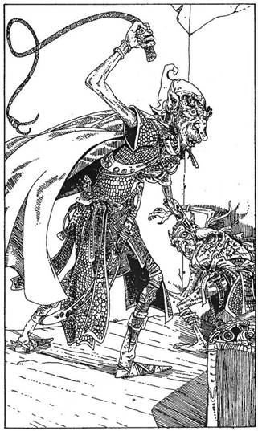
167.
Egy titkos ajtóra bukkansz. Ha benyitsz, egy kettős átjáró metszéspontjában találod magad. Észak felé egy rövid idő után zsákutcába jutsz, kelet felé pedig a folyosó egy útkereszteződéshez vezet. Ha át akarsz haladni a titkos ajtón, megteheted, lapozz a 187-re, de úgy is dönthetsz, hogy nem lépsz be rajta. Akkor zárd be az ajtót, és menjél vissza az úton az elágazásig. Lapozz a 359-re.
168.
Az ajtó egy hatalmas terembe nyílik. Az óriási szék és a masszív asztal azt sugallja, hogy magasabb rangú valaki vagy valami használja a szobát. Egy ládát pillantasz meg a szoba közepén. Az egyik sarokban egy ember nagyságú bibircsókos lény áll, mellette ugyanabból a fajtából egy kisebb teremtmény. Korbáccsal a kezében az Ork Törzsfőnök ütlegeli szolgáját, aki a földön fetrengve nyöszörög. Mit csinálsz?
Rátámadsz mindkettőre? Lapozz a 372-re.
A Törzsfőnökre sújtasz, abban a reményben, hogy a szolgája majd neked fog segíteni a harcban? Lapozz a 65-re.
Távozol, és visszamész az elágazáshoz? Lapozz a 293-ra.
169.
Az összes kulcsot, az egyiket a másik után bedugod a zárakba, és amint elfordítod őket, halk kattanást hallasz. Valamennyit jól helyezted be! Amint az utolsó kulcs is megfordul, engedni kezd a láda fedele, és felemelheted. Hogy meglásd, mi van benne, lapozz a 400-ra!
170.
A kereszt színtiszta ezüst, négy aranypénzt ér. Jegyezd fel a Kalandlapra, és lapozz a 319-re!
171.
Egy észak-dél irányú rövidke út északi végénél vagy, zsákutcába kerültél. Ha átkutatod a falakat, lapozz a 337-re, ha visszamész déli irányba, lapozz a 187-re.
172.
Az Öreg ember hirtelen kinyitja a szemét. Meglát, és felkapja a padja mellé támasztott félbetört evezőlapátot. Megmondod, hogy nem akarod bántani, de továbbra is résen áll, gyanakodva méreget. Bár elég ártalmatlannak látszik, a kutyája még veszélyes lehet. Az Öreg cipőfűzői nincsenek befűzve. Mit csinálsz?
Kirántott karddal a kutyára támadsz? Lapozz a 249-re.
Megpróbálsz néhány kérdést feltenni az Öregnek, amivel megkönnyítheted kutatásodat? Lapozz a 141-re.
Megmondod neki, hogy lógnak a cipőfűzői? Lapozz a 165-re.
173.
Itt csak az ezüstfegyverek segíthetnének. Amikor a lény harmadszor is sebet ejt rajtad, lapozz a 24-re! Ha legyőzöd, mielőtt harmadszor is megsebezne, lapozz a 135-re. Ha Elmenekülsz az északi ajtón át, lapozz a 360-ra. Ha van nálad Örök Álmot Adó Nyílvessző, megpróbálkozhatsz használatával. Tedd próbára Szerencséd! Ha szerencsés voltál, eltalálod vele a lényt, és az azonnal meghal. Ha balszerencsés vagy, elhibázod.
174.
Lapozz a 198-ra.
175.
Egy szűk folyosón vagy. Mögötted egy rejtekajtó nyílik keletre. Előtted útkereszteződés. Ha belépsz az ajtón, lapozz a 177-re, ha a keresztúthoz mész, lapozz a 267-re.
176.
Mész tovább az úton, mely egy idő után szélesedni kezd, végül egy zord sziklabarlang bejáratához érsz. A barlang legalább harminc méter mély, és nem látsz semmiféle kijáratot. Ha bemész a barlangba, lapozz a 270-re, ha visszatérsz az elágazáshoz. Lapozz a 375-re.
177.
Egy észak-dél irányú úton állsz. Észak felé tekintesz, messze egy keletnek vezető út látszik. Ha akarod, átkutathatod - lapozz az 52-re. A délre menő út egy idő múlva nyugatnak kanyarodik. Mehetsz ennek az útnak a déli végéig, lapozz a 391-re. A nyugati falon éppen előtted egy rejtekajtót pillantasz meg. Ha akarsz, benyithatsz rajta, lapozz a 175-re.
178.
Bizonytalan léptekkel átvágsz a szobán az északi falban lévő ajtó felé. Kinyitod, és áthaladsz rajta, lapozz a 162-re.
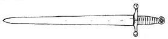
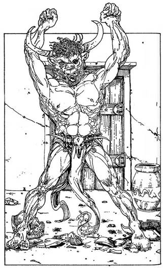
179.
Egy hatalmas, négyszög alakú terembe jutottál. A földön szanaszéjjel törött cserépdarabok hevernek. Egy nagyméretű agyagedény azonban érintetlen és tiszta, átlátszó folyadék van benne. Egy teli tál aranypénz van mellette. Miután beléptél, az ajtó becsapódik mögötted, sarkon fordulsz, és egy különös, félig ember, félig bika alakú teremtményt pillantasz meg, amint rád bámul. Egy Minotaurusz közeledik óvatosan feléd!
Lehajtja fejét, szarvaival célba veszi a mellkasodat, és rohamra lendül. Meg kell küzdened vele!
Minotaurusz ÜGYESSÉG 9 ÉLETERŐ 9
Három Forduló után igyekszel az ajtó közelébe manőverezni, hogy szükség. esetén Elmenekülhess. Ha így döntesz - lapozz az 54-re, de fizesd meg érte a büntetést! Ha folytatod a harcot, és megölöd a Minotauruszt, lapozz a 258-ra. Ha kalandod során már jártál ebben a szobában, és már legyőzted, a termet üresen fogod találni, lapozz az 54-re.
180.
Az út előbb nyugatnak tart, azután délnek fordul. Végül meg kell állnod, zsákutcába kerültél. Ha visszamész a hármas elágazáshoz, indulhatsz keletnek, lapozz a 70-re, északnak, lapozz a 329-re, vagy átkutathatod a zsákutcát, lapozz a 22-re.
181.
Rohansz tovább a fal mellett, egy ajtót keresve, de egyet sem találsz. Dobhártyád szinte szétrobban a zajtól. 1 ÜGYESSÉG pontot vesztettél. Megpróbálkozhatsz a nyugati fallal, lapozz a 355-re, vagy az északival, lapozz a 265-re, de mindenképpen kiutat kell találnod, mégpedig sietve!
182.
Két kulcs pontosan beleillik a zárakba, de a harmadik nem. Alig tudsz félreugrani, amikor a ládából áttetsző folyadék lövell ki. Alig hibázott el, de még így is veszítesz 2 ÉLETERŐ pontot, mivel a folyadék mérges gőzt bocsát ki magából, amitől köhögsz és fulladozol.
Visszalépsz a ládához, és egy másik hármas kulcskombinációval próbálkozol meg. Add össze a kulcsokon lévő számokat, és ettől a fejezetszámtól folytasd!
Ha nincs több kulcsod, amit kipróbálhatnál, kimerülten leroskadsz. Kétségbeesetten gondolsz rá, hogy milyen közel voltál már a célhoz. Ha legközelebb bemerészkedsz a Labirintusba, ne feledd el, kulcsokat kell keresned!
183.
Átkutatod a halott Orkok testét, de zsebükben csak néhány fogat, körmöt, csontot és kést találsz. Átvizsgálod a szobában lévő szekrényeket, de csak durván megmunkált tányérokat, tálakat és kanalakat lelsz. Egyszer csak egy félméteres, vékony bőrtokra bukkansz. Ha kinyitod a tokot, lapozz a 266-ra, ha itt hagyod és távozol, lapozz a 237-re. Büszke lehetsz győzelmedre: 1 ÜGYESSÉG és 5 ÉLETERŐ pontot szereztél vele.
184.
Egyedül vagy a Csónakházban, és van némi időd, hogy átkutasd, mielőtt a Csontvázak visszatérnének. Ha megnézed a fiókokat, lapozz a 322-re, ha átvizsgálod a Csontvázak szerszámait, lapozz a 34-re. Ahogy kutatni kezdesz, zajt hallasz az északi ajtó mögül.
185.
A kéz elsorvad, és visszahúzódik a padlóba. Ugyanakkor a többi kéz is elpusztul, lassan elenyésznek, visszabújnak a csempékbe. Elhatározod ezután, hogy csak a csillag alakú csempékre lépsz. Óvatosan átmész a szobán az északi falban lévő ajtóhoz. Az ajtó kinyílik, és te 2 Szerencse pontot kapsz. Lapozz a 162-re.
186.
Lapozz a 198-ra!
187.
Egy útkanyarulat közepén állsz. Észak felé zsákutcába jutsz. Ha megvizsgálod, lapozz a 171-re, ha kelet felé mész, lapozz a 308-ra.
188.
Majdnem két méter magas. Feléd közeledik. A teste szőrös, fogai hegyesek. Szeme fénylik, ujjain a körmök éles karmokká váltak. Orra akár a patkányé. Egy Patkányemberrel állsz szemközt.
Patkányember ÜGYESSÉG 8 ÉLETERŐ 5
Küzdj meg vele. Ha legyőzted, lapozz a 342-re! Ha úgy döntesz, hogy Elmenekülsz, rohanj át a roskadozó hídon, és lapozz a 209-re.
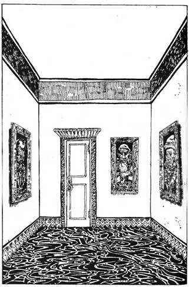
189.
Az ajtó egy rövid folyosóra nyílik, amely néhány méter után egy újabb ajtónál ér véget. Ugyanolyan, mint az, amin az előbb jöttél át. Hallgatózol, de csend van. Megpróbálkozol az ajtónyitó gombbal, elfordítod. Egy az előbbihez hasonló méretű helyiségbe lépsz, de ez a szoba gyönyörűen fel van díszítve, márványpadlója ragyog, az érdes falakat fehérre festették. Mind a négy falon egy-egy festmény lóg, az északi oldalon még egy ajtó nyílik. Ha egyenesen átmész a szobán, lapozz a 90-re, ha megállsz megnézni a képeket, lapozz a 25-re.
190.
Egy észak-dél irányú szűk folyosón vagy. Észak felé az út zsákutcába torkollik. Megvizsgálhatod ezt, lapozz a 167-re, vagy feladod és visszamész a kereszteződéshez, lapozz a 359-re.
191.
Sikoltozva bújik be az asztal mögé. Rettentően megijedt agresszív viselkedésedtől. Vékony, vinnyogó hangon magyarázza, hogy ő csupán Zagor Labirintusának megbízott felügyelője. Beszélsz hozzá, és újfent megnyugtatod, nem esik bántódása. Végül kimerészkedik a pult mögül. Leül, s amint bizalma visszatér, furcsa dolog történik. Egyre határozottabb és magabiztosabb lesz. Egy könyv felé fordul, ujjával rámutat, s a könyv magától lecsusszan a polcról, odaszáll elé az asztalra. Rá kell ébredned, valamiféle varázslóval van dolgod, még az is lehet, ő a Labirintus Ura, és személyesen jött, hogy felderítse, ki is vagy. Megkérded, merre vezet kifelé az út a Labirintusból. - Menj ki a déli ajtón - mondja -‚ jobb kéz felől van egy ajtó,
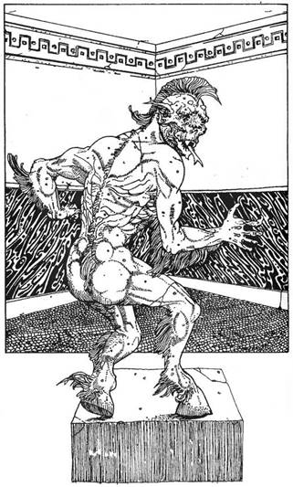
menj el mellette egészen addig, amíg tudsz. Ott fordulj balra. Haladj át az első útkereszteződésen, majd a következőnél fordulj balra.
Ha megfogadod a tanácsát, távozol a déli ajtón keresztül, és elmész a második útkereszteződésig, lapozz a 308-ra.
Ha a déli ajtón lépsz ki, de utána a saját fejed után mész, lapozz a 392-re.
Ha a nyugati ajtón mész ki, lapozz a 46-ra.
192.
Lapozz a 169-re!
193.
Az ajtó feltárul, és egy apró kamrába lépsz be. Tágra mered a szemed a csodálkozástól, ahogy körülnézel. A szoba falait gondosan megmunkált kőfaragványok borítják. Mozaikok és márványberakású intarziák olyan szépséget kölcsönöznek a szobának, hogy ilyet még életedben nem láttál. Az egyik sarokban egy hatalmas fémszobor áll, egy egyszemű lényt ábrázol. Egyetlen szeme csillogó ékkő. Mivel másik kijárat nincs, vissza kell majd menned az elágazáshoz - de a hatalmas drágakő kísértésbe hoz. Ha otthagyod, és visszamész az elágazáshoz, lapozz a 93-ra. Ha megpróbálod magaddal vinni, lapozz a 338-ra.

194.
Meghúzod az íjat, és lősz, de kétségbeesve látod, hogy a nyílvessző, amely egyenesen felé száll, néhány centiméterrel a mellkasa előtt megáll és a padlóra hull. Ellenfeled felnéz, és gonosz, kárörvendő vigyorral pillant rád. Mit teszel?
Kardot rántasz, és támadásba lendülsz? Lapozz a 142-re.
Megpróbálsz hátizsákodból valami más fegyvert választani? Lapozz a 105-re.
195.
Ez a mese, figyelembe véve, hogy aligha találkozhatnak élő emberrel, elég hihetetlennek tűnik. De a Csontvázak meglehetősen tompa agyúak, te ezt tudod, ezért is próbálkoztál meg vele. Dobj egy kockával!
Ha 1-est vagy 2-est dobsz, nem hisznek neked, és tovább közelednek. Lapozz a 140-re.
A 3-as és a 4-es azt jelenti, nem bizonyosak a dologban, kettőt maguk közül elküldenek, ezek az északi ajtón át távoznak, a többiek sakkban tartanak fegyvereikkel. Lapozz a 164-re.
Az 5-ös és a 6-os dobással eléred, hogy bevegyék mesédet, és mindnyájan visszatérjenek munkájukhoz. Lapozz a 9-re. 2 Szerencse pontot nyertél!

196.
Átkutatod a szobát. Bármennyire keresed, nem találod a rejtett kapcsolót, mely a könyvszekrény ajtaját nyitná - az Öreg biztosan belülről zárta be. De egy asztalfiókban öt aranyra bukkansz. Úgy döntesz, visszamész déli irányba, az elágazáshoz. Lapozz a 280-ra.

197.
Felérsz a lépcsősor tetejére, az út élesen kelet felé kanyarodik. Megállsz, hogy tájékozódni tudjál, amikor csikorgó hangot hallasz a mögötted lévő sziklafal felől. Ahhoz még idejében fordulsz meg, hogy lásd: egy nehéz vasrostély zuhan le, és elzárja a visszafelé vezető utat. Már csak előre mehetsz! Mit teszel?
Továbbmész egyenesen előre? Lapozz a 48-ra.
Rejtekajtókat keresve a falakat vizsgálod meg? Lapozz a 295-re.
198.
Az egyik kulcs nyitja a zárat, a másik kettőt viszont nem tudod elfordítani. Amint erőlködsz, kétszer halkan kattan valami, azután sivító hang hallatszik, és a láda két kis dárdát lő ki rád. Hátraugrasz, hogy elkerüljed őket, de bevered a fejed a mögötted lévő falba és öntudatlanul a földre zuhansz.
Tedd próbára Szerencséd! Ha szerencsés vagy, a hajítódárdák elkerülnek, és zúgó fejjel magadhoz térsz, de 2 ÉLETERŐ pontot vesztesz. Ha balszerencsés vagy, a dárdák eltalálnak, és sohasem nyered vissza eszméletedet.
Ha szerencsés vagy, megpróbálkozhatsz újabb kulcskombinációkkal (ne feledd, csak egy kulcsod volt jó). Add össze a kulcsokon lévő számokat, és lapozz ahhoz a fejezetszámhoz, amit eredményül kaptál, folytasd innen a játékot.
Ha már kipróbáltad az összes nálad lévő kulcsot, kezedbe temeted arcod, és sírva fakadsz. Már oly közel voltál célod eléréséhez, és most elölről kell kezdened mindent. Indulj neki újra a Labirintusnak, és ne feledd, útközben kulcsokat kell keresned!
199.
Az út határozottan szélesedni kezd, majd egy hatalmas barlang tárul fel előtted. Körülvilágítasz benne a lámpásoddal: a földön egyszerű kőfegyverek hevernek, a barlang közepén egy kialvóban lévő tűzrakás parázslik. Másik kijáratot nem találsz. Megfordulsz, hogy a saját nyomaidat követve visszaindulj, ám két Neander-völgyi Ősembert veszel észre, akik elállják a kijáratot. Kardot rántasz, fel kell készülnöd a küzdelemre.
ÜGYESSÉG ÉLETERŐ
Első Ősember 7 6
Második Ősember 6 4
Egyenként csapj össze velük. Ha győztél, hagyd ott a barlangot, és menj vissza az elágazáshoz. Lapozz a 283-ra.
200.
Lapozz a 387-re!
201.
A padlóra hanyatlasz. Kihúzod a dárdát a testedből, és bekötöd a sebet. Ez kissé enyhíti fájdalmadat, de még mindig gyengének érzed magad. Nem törődsz ezzel, és megpróbálod jobban megvizsgálni, mit is rejt a láda. Ha így döntesz, egyél előbb Élelmiszerkészletedből. Huszonöt aranypénzt találsz, és egy üveget, melynek címkéjén ez áll: a Láthatatlanság Itala. Csak egy alkalomra elegendő mennyiség van benne. A kesztyű továbbra is rejtély marad. Bármelyik talált tárgyat, akár az összeset is magaddal viheted hátizsákodban. Lapozz a 293-ra.
202.
Felpróbálod a sisakot. Pont jó a fejedre. Hirtelen égető fájdalom sugárzik át homlokodon. Nem tudsz világosan gondolkozni. Ez egy elátkozott sisak, és akárhogy szeretnéd, nem bírod levenni. 1 ÜGYESSÉG pontot veszítesz. A fájdalom hamarosan alábbhagy, de a sisaktól nem tudsz megszabadulni. Visszatámolyogsz az elágazásig, miközben kétségbeesetten próbálod összeszedni magad. Lapozz a 87-re.
203.
Adj magadnak 1 Szerencse pontot, amiért legyőzted a Farkasembert. Megpihenhetsz, és ehetsz valamit, ha akarsz. Körülnézel a szobában, de semmi olyat nem látsz, ami a hasznodra lehetne. Bár egy kulcscsomó
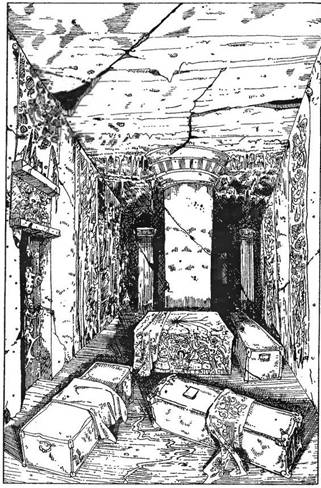
érdekesnek látszik, főleg az a kulcs, amelybe a Csónakház feliratot vésték. Egyik kulcs sincs megszámozva. Magaddal viheted a kulcsokat, ha akarod, és már indulhatsz is. Ha a nyugati ajtón mész ki, lapozz a 38-ra, ha a keletin, lapozz a 66-ra.
204.
Az Öreg ember az asztalkánál fel sem tekint, de ördögi kis állatkája gyanakodva mered rád, és vékony, cincogó hangon csivitelni kezd. Az Öreg felmordul, és megkérdezi, nincs-e kedved fogadni vele. (Csak akkor fogadhatsz, ha legalább egy aranypénz van nálad) Mit teszel?
Elfogadod az ajánlatát? Lapozz a 130-ra.
Visszautasítod és továbbmész? Lapozz a 280-ra.
Rátámadsz az Öregre? Lapozz a 377-re.
205.
Az ajtó kinyílik, és valami sötét kriptafélében találod magad. A terem nagyon nagy. Az egyik végében egy oltár magasodik, a földön összevissza különféle koporsók fekszenek. Egy ajtó van mögötted a déli falban és egy másik a nyugatiban. Átkutathatod a szobát, lapozz a 254-re, vagy ha túl félelmetesnek találod, a nyugati ajtón azonnal távozhatsz, lapozz a 380-ra.
206.
Belépsz egy hatalmas, négyszögletű szobába. Közepén egy ősz hajú Öreg ember üldögél egy íróasztalnál, mely papírokkal és különféle pergamenekkel van borítva. Az Öreg kezében hosszú lúdtoll. A falak a padlótól a mennyezetig be vannak polcozva, rajtuk könyvek ezrei sorakoznak. Belépsz, és az Öreg felpillant. Vajon felismer-e téged? Ha már voltál itt, lapozz a 284-re, ha nem, a 341-re.
207.
Amint belépsz az ajtón, egy óriási teremben találod magad. A földön rendetlenül szétszórva mindenféle fadarabok, roncsok hevernek. Még egy ajtót fedezel fel az északi falban. Az egyik sarokban durván ácsolt faasztal áll, rajta egy ládika. Egy másik sarokban valószínűleg alszik valaki (de lehet, hogy holtan hever?), egy borzasztó külsejű, ember nagyságú teremtmény. A bőre bibircsókos, haja borzas, ujjain köröm helyett hosszú karmok. Ha megpróbálsz lábujjhegyen átsurranni az északi ajtóhoz, lapozz a 83-ra, ha az asztalhoz lopakodsz a ládikáért, lapozz a 154-re.
208.
A nyugati fal mellett haladó úton távolabb meglátsz egy újabb ajtót. Hallgatózol, de nem hallasz semmit. Ha megpróbálod az ajtót kinyitni, lapozz a 397-re, ha továbbmész észak felé, lapozz a 363-ra.
209.
A híd évek óta elhanyagolt állapotban van, gerendái korhadtak, ócskák. Az egyik palló megroppan a lábad alatt. Dobj egy kockával. Ha 6-ost dobsz, belezuhansz az alattad kavargó folyóba - lapozz a 158-ra, ha 6-nál kevesebbet dobsz, visszanyered egyensúlyodat, és lapozz a 47-re.
210.
Az út rövidesen egy újabb elágazáshoz érkezik. Mehetsz egyenesen tovább, nyugati irányba, lapozz a 225-re, vagy fordulhatsz északnak, lapozz a 357-re.
211.
A Wighteket (rossz szellemeket) csak színtiszta ezüstből készített fegyverrel lehet megsebezni. Ha az általad használt fegyver nem ilyen, csapjatok össze még egy Fordulóban! Ne feledd, hogy minden seb, amit rajtad ejt, az számít, de te nem tudod megsebezni, még mindig teljes erőben lesz (ÜGYESSÉG 9, ÉLETERŐ 6), kivéve azt az esetet, ha ezüstből készített fegyvert választottál.
Ha van ezüstfegyvered, jobb, ha most előveszed, és lapozz a 173-ra.
Ha nincs, vagy ha már túl sok sebet kaptál, jobban teszed, ha elfutsz az északi ajtón keresztül, lapozz a 360-ra. De ne feledd, hogy ez Menekülés, és ráadásul futás közben még egy sebet ejt rajtad ellenfeled.
212.
A pergamen meglehetősen kopott, majdnem teljesen olvashatatlan. Valamiféle térkép az, címe szerint Zagor Útvesztője. Aligha veheted hasznát, bár az egyik, északra nyíló szobánál ezt olvashatod „.ESZ.LY”, egy keleti tájolásúnál pedig azt, hogy „K.S ..BE..K”.
Összehajtod a térképet, és zsebre vágod. Ha még nem vizsgáltad meg a folyadékot, most megkóstolhatod, lapozz a 369-re, vagy folytathatod utadat észak felé, lapozz a 120-ra.
213.
Az ajtó zárva van. A következőképpen rohamozhatod meg. Dobj két kockával. Ha a dobott számok összege egyenlő vagy kevesebb ÜGYESSÉG pontjaidnál, feltörted az ajtót, lapozz a 36-ra. Ha a dobott számok összege nagyobb ÜGYESSÉG pontjaidnál, az ajtó zárva marad, és 1 ÉLETERŐ pontot veszítettél, mivel felhorzsoltad a vállad, és tovább kell menned az úton, lapozz a 314-re.
214.
A sziklába faragott arc észak felől nézve sima és nedvesen fénylő. Különféle színárnyalatokban mohafélék nőnek rajta. Félelmetes csend van, amit csak az alattad hömpölygő folyó halk csobbanásai törnek meg. Három lehetőséged van:
Egy út vezet északnyugatnak. Ha ezt választod, lapozz a 271-re.
Egy hatalmas gerendákból ácsolt ajtó áll előtted, pontosan a sziklába faragott arc közepén. Ha benyitsz rajta, lapozz a 104-re.
A folyó mentén egy másik út vezet keletnek. Ha erre indulsz, menj végig a folyóparton, lapozz a 99-re.

215.
Hátizsákodba nyúlsz az Y alakú fáért, és megdöbbenve látod, hogy kettéhasadt, kalandjaid során eltörött. Mit csinálsz?
Kardot rántasz és támadásra lendülsz? Lapozz a 142-re.
Megpróbálsz valami mást keresni a hátizsákban? Lapozz a 105-re.
216.
A víz felfrissít. Míg iszol belőle, úgy érzed, mintha valamiféle erő áramlana testedbe, mintha az Élet Vizéből ittál volna. 4 ÉLETERŐ pontot nyersz, és Szerencse pontjaidat is a kezdeti értékre állíthatod vissza. Ami számodra az Élet Vize, az a gonosz Goblinoknak nyilván halálos méreg. Ehetsz is itt, ha akarsz. Mikor kipihented magad, menj keresztül az északi ajtón. Lapozz a 384-re.

217.
A cövek épp csak egy kicsivel suhan el a Vámpír feje mellett. Míg figyeled, célba találsz-e, ismét belenézel a szemébe. Hívogatóan újból közelebb int magához. Akaratodat elveszted. Lapozz a 118-ra.
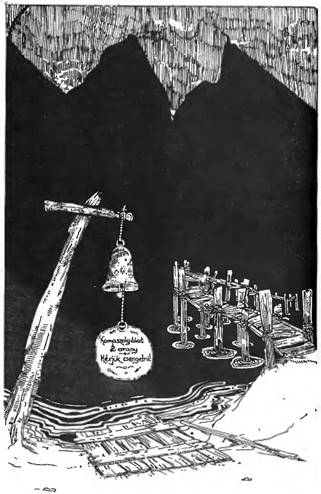
218.
Egy föld alatti folyó déli partján állsz, és a mély, fekete vízre meredsz. Úgy tűnik, négyféleképpen is át lehet kelni a folyón. Tőled balra egy rozsdás harang lóg, rajta felirat: „Kompszolgálat két arany. Kérjük csengetni.”
A parton előtted egy kis tutaj, mellette hosszú farúd pihen, azzal átcsáklyázhatnál a vízen. Jobbra roskatag, öreg híd vezet át a folyó fölött. Ha egyikben sem bízol, át is úszhatsz. Melyik lehetőséget választod?
Meghúzod a harangkötelet? Lapozz a 3-ra.
Átcsáklyázol a tutajjal? Lapozz a 386-ra.
Megkockáztatod a hídon való átkelést? Lapozz a 209-re.
Átúszol? Lapozz a 316-ra.
219.
Lapozz a 182-re!
220.
Felbőszül vidámságod láttán. Két kezét meglengeti a levegőben, néhány különös szótagot mormol, azután rád mutat. Érzed, hogy a fejed kóvályogni kezd, és elveszíted az eszméletedet. Amikor magadhoz térsz, egy zsákutcában vagy. Lapozz a 171-re.
221.
Mik ezek a titokzatos tárgyak, amiket összeszedtél? Melyiket írtad fel először a Felszerelési Tárgyak listájára?
A páncélt? Lapozz a 72-re.
A pajzsot? Lapozz a 132-re.
A kardot? Lapozz a 27-re.
Az aranyat? Lapozz a 110-re.
A keresztet? Lapozz a 170-re.
222.
Egy hosszú folyosón haladsz előre, az út éles hajtűkanyarral ér véget. Egy kelet-nyugati irányú folyosó mentén kelet felé egy keresztúthoz érsz. Lapozz a 85-re.

223.
Az ajtót erősen bezárták. Ha megpróbálod erőnek erejével felfeszíteni, lapozz az 53-ra, ha folytatod utadat tovább a folyosón, lapozz a 300-ra.
224.
Szemeddel követed a lény mozdulatait, egyszer csak belepillantasz átható tekintetébe. Nézése megigéz, és amint int, hogy lépj közelebb, érzed, hogy saját akaratod elsorvad. Lapozz a 118-ra.

225.
Az út halad tovább nyugati irányba, majd egyenesen északnak fordul. Nemsokára egy elágazáshoz érkezel, ahol egy szűk folyosó vezet nyugatnak.
Északi irányba tartasz? Lapozz a 77-re.
Nyugatnak fordulsz? Lapozz a 63-ra.
226.
Csak rövid ideig mész délnek, mert egy keresztúthoz érkezel. Lapozz a 267-re.

227.
Az ajtó kinyílik, és te belépsz egy kicsi, füstös szobába. Bent egy faasztal mellett négy apró emberke üldögél. Talán egy méter magasak, de szemmel láthatóan mindnyájan felnőttek. Bőrük cserzett, szakálluk hosszú és bozontos. Szitkozódnak, nevetgélnek és tréfálkoznak kártyázás közben. Hanyatt dőlnek apró székükben, és hosszú agyagpipából eregetik a füstöt. Az asztalon maréknyi rézpénz és négy korsó sör. Ahogy belépsz, mulatságuk félbeszakad. Résen vannak, de nem látszanak túl veszélyesnek. Egyikük feláll, és megjegyzést tesz hiányos neveltetéseddel kapcsolatban, miszerint még csak nem is kopogtattál az ajtón belépés előtt. A többiek egyetértően bólogatnak. Mit csinálsz?
Beszélgetni kezdesz velük, és elnézed nekik a kioktatást? Lapozz a 131-re.
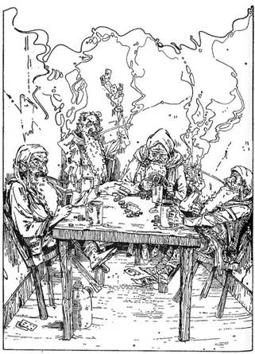
Magyarázkodsz, meghajolsz és távozol? Lapozz a 291-re.
Megkérdezed, beszállhatsz-e kártyázni? Lapozz a 100-ra.
Kardot rántasz, és megtámadod vezérüket? Lapozz a 20-ra.
Ha már voltál ebben a szobában, most üresen találod. Lapozz a 291-re.
228.
Nem találsz titkos átjárókat. Óvatos vagy, és nem csapsz túl nagy zajt, nehogy magadra vond valami kóbor lény figyelmét. Megállsz és hallgatózol, de csend van. Visszatérsz a keresztúthoz. Lapozz a 85-re.
229.
Visszajutottál az elágazáshoz, és ez alkalommal jobbra fordulsz. Lapozz a 69-re.
230.
A lény, akivel szembekerültél, egy foszladozó testű ember. Szemei gyorsan cikáznak ide-oda, téged figyelve. Hosszú nyelve szisszenő hanggal csapódik ki a szájából. Fogai és körmei élesek, és úgy tűnik, egyáltalán nem tart fegyvereidtől. Egy Ghoullal állsz szemben!
Ghoul ÜGYESSÉG 8 ÉLETERŐ 7
Még az a képessége is megvan, hogy ha négyszer meg tud sebezni a küzdelem során, megbénít téged. Óvakodj ettől! Ha megöl vagy megbénít, lapozz a 64-re, ha te győzöl, lapozz a 390-re!
231.
Lapozz a 182-re!
232.
A Pókkal vívott kegyetlen csata után szinte teljesen kimerülten nekilátsz, hogy a kardoddal leszabdald a csizmákat. Végül megszabadulsz tőlük, és távozhatsz a barlangból. Az úton visszamész az elágazáshoz. Lapozz a 375-re.
233.
Lapozz a 198-ra!
234.
Nem találsz titkos átjárókat, viszont kutatásod zajával felhívtad magadra valami baljóslatú szörny figyelmét. Lapozz a 161-re, hogy megtudd, mi fog megjelenni az úton előtted. Küzdj meg a szörnnyel.
Ha győztél, folytathatod az utad, és lapozz a 43-ra! Ezt a számot (43) írd le, hogy tudjad, merre kell menned!

235.
Követed az utat nyugat felé, mely azután élesen északnak kanyarodik. Néhány méter után találsz egy nyugatra vezető utat is. Ha nyugatnak fordulsz, lapozz a 176-ra, ha kitartasz továbbra is az északi irány mellett, lapozz az 5-re.
236.
A csata elkezdődik. A Csontvázak egyesével tárnádnak rád:
ÜGYESSÉG ÉLETERŐ
Csontváz A 6 5
Csontváz B 6 6
Csontváz C 5 5
Ha győztél, lapozz a 395-re!
237.
Fürgén leereszkedsz az útra, és visszamész az elágazáshoz. Most északi irányba indulsz. Lapozz a 285-re.
238.
Hármas útkereszteződéshez érkeztél. Ha keletnek tartasz, lapozz a 70-re. Ha nyugatra mész, lapozz a 180-ra. Ha északra indulsz, lapozz a 329-re.
239.
Eszedbe jutnak az Öreg ember szavai: „Hamarabb szükséged lehet rá, mintsem gondolnád." Hátizsákodba nyúlsz, és előhúzod a gyertyát. Önmagától azonnal világítani kezd. A szörnyű zaj megszűnik, és a szobát kék fény tölti meg a gyertyádtól. A falakon lévő festményeken megmozdulnak az alakok. Hang nélküli sikolyok törnek ki belőlük, mintha egy kétdimenziós pokol foglyai lennének. A szemben lévő falon egy újabb ajtót pillantasz meg, ha ezen át távozol, lapozz a 88-ra, ha itt maradsz átkutatni a szobát, lapozz a 149-re. Adj 1-et Szerencse pontjaidhoz az előrelátásodért!
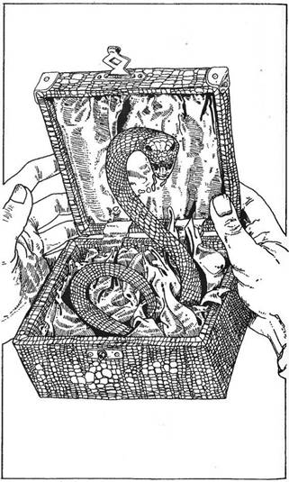
240.
A doboz könnyű, de valami csörög benne. Felemeled a fedelét, és egy kicsi Kígyó pattan ki belőle, egyenest a csuklódnak támad. Meg kell küzdened vele!
Kígyó ÜGYESSÉG 5 ÉLETERŐ 2
Ha megölted a Kígyót, lapozz a 145-re.
241.
Rátámadsz a facövekkel a festményre, de egyszer csak a csuklódban hasogató fájdalmat érzel. Valami láthatatlan erő arra kényszerít, hogy elejtsd a cöveket. A futást választod, és az északi ajtón át rohansz el, lapozz a 90-re. 1 ÜGYESSÉG pontot veszítettél, hogy megtanuld tisztelni a Varázsló erejét.
242.
Az ajtó kinyílik, és egy kicsi, homályos kamra tárul a szemed elé. A falakon arany- és ezüstcsipkékkel gondosan díszített függönyök lógnak. Az egyik sarokban magányos lángnyelv lobog, fényét a középen álló alacsony asztalra veti, amin hatalmas láda fekszik. Odalépsz, hogy megvizsgáld, de váratlanul, körös-körül, mindenfelől (de mégsem meghatározható helyről) titokzatos hang csap fel, és betölti a szobát. Olyan, mint a gyülekező viharfelhők között felharsanó mennydörgés.
Megközelíted a ládát, és látod, hogy három zár tartja szorosan lezárva. Ahogy közelítesz, a hang egyre erősödik. Mit teszel?
Kardoddal rácsapsz a ládára, és megpróbálod széthasítani, hogy kinyíljon? Lapozz a 379-re.
Átkutatod a felszerelésedet, hátha találsz olyan kulcsokat, melyek nyitják a zárakat? Lapozz a 139-re.
243.
Rémülten veszed észre, hogy az az átkozott fogantyú csapda volt. Bár fogantyúnak látszott, valójában egy viasszal bevont kardpenge, ami most kegyetlenül megvágta a kezedet. Jobb vagy bal kézzel nyúltál hozzá?
Dobj egy kockával! Ha a dobott szám páratlan, kardforgató kezeddel értél a pengéhez, harcképességedet a seb alaposan lecsökkenti. 3 ÜGYESSÉG és 1 ÉLETERŐ pontot vesztettél. Ha páros számot dobsz, akkor a másik kezedet használtad, így a sérülés nem olyan zavaró. 1 ÜGYESSÉG és 2 ÉLETERŐ pontot veszítesz. Ha úgy döntesz, hogy meghúzod a jobb oldali fogantyút, lapozz a 128-ra. Ha nem húzod meg, nem juthatsz tovább! Ügyelj, melyik kezeddel nyúlsz hozzá!
244.
Az út észak felé vezet, messziről már hallatszik egy föld alatti folyó csobogásának a zaja. A levegő hűvös és frissítő. Hamarosan odaérsz, ahol a folyópart kiszélesedik, és kétségbeesetten látod, semmilyen módon nem tudsz átkelni a túloldalra. Kelet felé a folyó egy sziklabarlangon folyik keresztül. Leülhetsz pihenni és enni, lapozz a 143-ra, de akár azonnal folytathatod utad az egyetlen lehetséges módon: a folyóba veted magad, és úszol lefelé az áramlással, lapozz a 399-re.
245.
Lapozz a 198-ra!
246.
Elindulsz délnek egy köves út mentén. Nyugatnak kanyarodik, azután délnek, azután megint nyugatnak, és egyszer csak egy hármas útkereszteződésnél találod magad.
Indulhatsz északnak. Lapozz a 329-re.
Tarthatsz nyugat felé. Lapozz a 180-ra.
Visszamehetsz keletre. Lapozz a 70-re.

247.
Egy kicsit meglepődik hirtelen támadásodtól, de azután egyszerűen csak felemeli a kezét. És amint így tesz, hirtelen erősen beleütközöl valamibe, bár előtted látszólag nincs semmi. A földön üldögélsz döbbenten, és az orrodat dörgölöd. 2 ÉLETERŐ pontot veszítettél. Az Öreg kuncogva mondja: „Szegény bolond. Valóban azt hitted, védtelenül állok itt a gonoszság birodalmában? Megfizetsz ostobaságodért!”
Felállsz, visszamész az úton, és északnak fordulsz. Lapozz a 292-re.
248.
A teremtmény, amit most felébresztettél, egy Ork! Feltápászkodik a földről, és elfordul, hogy megragadjon egy kötelet, mely valószínűleg a riasztóharangot kondítja meg. Gyorsan rá kell támadnod!
Ork ÜGYESSÉG 6 ÉLETERŐ 5
Ha legyőzted, mehetsz tovább a folyosón. Lapozz a 301-re.

249.
Ahogy megmoccansz, a kutya támadásba lendül. Rettenetes fekete fogai a torkodat célozzák. Kétméternyire lehet, mikor a szájából lángnyelvet fúj, egyenest az arcodba! Még épp idejében hajolsz le, de most már nem kerülheted el a küzdelmet.
Kutya ÜGYESSÉG 7 ÉLETERŐ 6
Rendes támadásán kívül, minden egyes Fordulóban (a kutya tüzes lehelete miatt) dobj egy kockával! Ha 1-et vagy 2-t dobsz, megperzselődsz, és 1 ÉLETERŐ pontot veszítesz. Ha nagyobbat dobsz, kikerülted a lángnyelvet. A tűz ellen használhatod a Szerencsédet. Elmenekülni egyedül a déli ajtón keresztül lehet. Lapozz a 66-ra.
Az Öreg figyeli a küzdelmet, de nem mozdul, csak akkor, ha legyőzöd a kutyáját. Ha megölted az állatot, Elmenekülhetsz a déli ajtón keresztül, lapozz a 66-ra, de arra már nincs időd, hogy bármit is magaddal vigyél. Ha akarsz, maradhatsz, lapozz a 304-re. 1 Szerencse pontot mindenképpen nyertél.

250.
Egy rövid folyosón vagy, amely néhány méterrel előtted zsákutcába torkollik. Átvizsgálod a sziklafalat, de nem látsz sehol átjárót. Visszamész az útkereszteződéshez, és ez alkalommal egyenesen északnak indulsz. Lapozz a 366-ra.

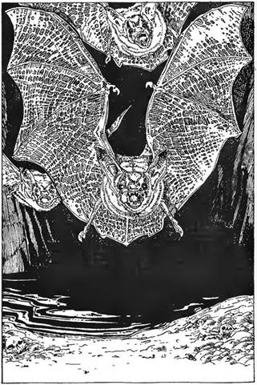
251.
Az út élesen északi irányba kanyarodik, és távolról víz csobogását hallod. Végül egy föld alatti folyó déli partjára érsz. A kavicsos folyóparton állva szárnycsapkodást hallasz, és feltekintve három Óriás Denevért pillantasz meg, amint lecsapnak rád. Küzdjél meg velük, a három Denevért vedd egy lénynek!
Denevérek ÜGYESSÉG 6 ÉLETERŐ 6
Ha győztél, lapozz a 344-re! A folyóba ugorva Elmenekülhetsz. Lapozz a 399-re.
252.
Meghúzod a fogantyút, mire nagy nyikorgással megmozdul előtted a sziklafal és a lábad előtt lévő talaj. Mintha csak egy hatalmas forgóasztalon lennél, megfordulsz tengelyed körül, és végül ott állsz a sziklafal túlsó oldalán egy észak-déli folyosón. Ha északnak mész, lapozz a 312-re, ha délnek, lapozz a 226-ra.
253.
A folyosó ezúttal egy kis faajtónál ér véget, az ajtón csontból faragott fogantyú. Hallgatózol, de belülről semmi sem szüremlik ki. Megpróbálod a fogantyút, az ajtó enged, és benyitsz egy kőpadozatú szobába. Csak nehezen tudsz a kiálló köveken lépkedni. A szoba egyik sarkában nagy kupac törmelék. Főleg kődarabok meg por, de van ott néhány különös formájú fadarab meg egy jó hosszú kötél. Az északi falból egy ajtó nyílik, erre mehetsz tovább. Mit teszel?
Megvizsgálod a fadarabokat? Lapozz a 328-ra.
Megnézed a kötéldarabot? Lapozz a 125-re.
Távozol az északi ajtón keresztül? Lapozz a 73-ra.
254.
Halálos csend van. Amint a koporsók között lopódzol, egy rád hulló vízcsepp megriaszt. Az oltár díszesen faragott, és ékkövekkel van kirakva. Gyönyörűen szőtt drapériák lógnak a falról, bár néhol már foszladoznak. Három koporsó van a szobában. Egy nyikorgó hang arra késztet, hogy megfordulj, lámpásod a legnagyobb koporsóra veti fényét. A koporsó fedele emelkedni kezd! Figyeled, ahogy egy fehér arcú, magas férfi felül benne. Kinyílnak szemei, és rád néz. Nyugodt arckifejezése sötét gyűlöletbe csap át. Kinyitja száját, torkából hátborzongató sziszegés hallatszik. Fogai akár a farkasé. Int, hogy lépj közelebb. Mit csinálsz?
Közelítesz, ahogy kívánja? Lapozz a 352-re.
Kardot rántasz, hogy felkészülj a küzdelemre? Lapozz a 333-ra.
Hátizsákodba nyúlsz valami más, támadásra alkalmas eszközt keresve? Lapozz a 279-re.
Kirohansz a nyugati ajtón? Lapozz a 380-ra.
255.
Az út erős, fából készült ajtónál ér véget. Ha megpróbálod kinyitni, lapozz a 193-ra, ha visszamész az elágazáshoz, hogy másik útvonalat keress, lapozz a 93-ra.
256.
Egy útkereszteződésnél vagy. Mehetsz észak felé, lapozz a 398-ra, bár erre az út hamarosan zsákutcába torkollik. Indulhatsz nyugatnak, lapozz a 297-re, vagy délnek, lapozz a 114-re.
257.
A folyosó néhány méteren keresztül egyenesen halad, azután egy faajtó zárja le. Hallgatózol az ajtónál, és dühös kiabálást hallasz belülről. Ha megvizsgálod, mi az, lapozz a 168-ra, ha inkább visszafordulsz, lapozz a 293-ra.

258.
Átválogatod a törött cserépdarabokat, de semmi érdekes nincs köztük. A folyadék kinézésre, szagra és ízre víznek látszik. Az aranypénzkupacról kiderül, hogy csalás. Nyolc igazi aranyat találsz a halom tetején (ezeket magaddal viheted), de az alatta lévők csupán festett hamisítványok. Ahogy hozzáérsz a vázához, az lecsúszik és eltörik. Egy vörös színű kulcs kerül elő, melyet az edény dupla fenekébe rejtettek. Magaddal viheted a kulcsot, melyre a 111-es számot vésték. Pihenhetsz, és ehetsz elemózsiádból, ha akarsz. 2 Szerencse pontot kapsz, amiért legyőzted a Minotauruszt, végül távozol. Lapozz az 54-re.
259.
Miközben a partra úszol a Krokodil elől, visszanézel, és látod, hogy a rejtélyes örvénylés eléri a hüllő testét, őrjöngésbe csap át, és amikor abbamarad, már nyoma sincs az állatnak. Hálát adva, amiért nem te voltál ott, és nem neked kellett megtudnod, mi az, kimászol a vízből az északi parton. Adj magadnak 1 ÜGYESSÉG és 2 Szerencse pontot. Lapozz a 7-re.
260.
Nem találsz titkos átjárót. Ha észak felé haladsz, lapozz a 359-re, ha délnek mész, lapozz a 329-re.
261.
Eléred az elágazást, és mész tovább kelet felé. Lapozz a 345-re.
262.
Az átjárótól kissé távolabb újabb kereszteződéshez érsz, ahol akár keletnek (lapozz a 199-re), akár nyugatnak (lapozz a 251-re) fordulhatsz.
263.
Rákiáltasz, amilyen erősen csak tudsz: Öreg, megszabadultál! Azonnal abbahagyja az üvöltést. Abban a minutában megáll, a padlóra zuhan, és hangosan zokogni kezd. Beszélgetsz vele, mert abban bízol, felfed néhányat a hegy titkaiból. Az Öreg fokozatosan összeszedi magát, és hálálkodni kezd. Belefog történetének elbeszélésébe. Sok évvel ezelőtt, ugyanúgy, mint most te, ő is belevágott a kalandba, a Varázsló kincsének felkutatásába. Az Orkok elfogták, és egy magányos cellába vetették, ahol úgy tartották, mint valamiféle kedvenc háziállatukat. Megkérdezed, nem akar-e társadul szegődni a továbbiakban, de egyetlen vágya, hogy kiszabadulva innen viszontlássa a külső világot. Útmutatást kérsz tőle, de azt mondja, nagyon keveset tud. Azt tanácsolja, tartsd tiszteletben a révészt, s ha az út végét lezáró vaskaput akarod kinyitni, akkor a falon lévő fogantyúk közül a jobb oldalit kell meghúznod. Azt is megtudod tőle, hogy a Csónakház kulcsait egy férfi és egy kutya őrzi. Kezet ráztok, kiléptek, és útjaitok különválnak. 1 Szerencse pontot kapsz. Lapozz a 314-re!
264.
Egyszerűen nincs rá mód, hogy erővel felnyisd az ajtót, tömör tölgyfából készült és legalább húsz centi vastag. Kardforgató kezed megsérül a kísérletnél - 1 ÜGYESSÉG pontot veszítesz. Csak akkor juthatsz keresztül az ajtón, ha van kulcsod a Csónakházhoz. Ebben az esetben lapozz a 80-ra, és átkozhatod magad, hogy miért nem használtad azt rögtön. Ha nincs kulcsod, vissza kell térned a folyópartra, és újra kell próbálkoznod. Lapozz a 129-re.

265.
Tapogatózol a fal mentén, és egy ajtóra bukkansz. Ügyetlenkedsz az ajtónyitogató gombbal, de végre kinyílik! Lapozz a 88-ra.
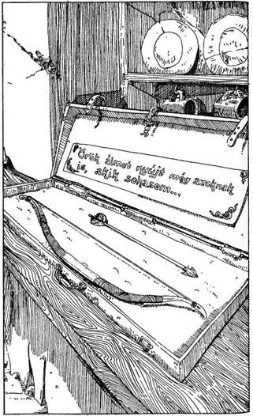
266.
A tok könnyedén kinyílik, és a belsejében egy pompás íjat és egy ezüst nyílvesszőt találsz. A tokon egy utasítás azt mondja: ... Örök álmot nyújt még azoknak is, akik sohasem... Az íjat és a nyílvesszőt a tokkal együtt a hátizsákodba teszed, és távozol. Ha akarsz, előtte ehetsz is Élelmiszerkészletedből. 1 Szerencse pontot nyertél. Lapozz a 237-re.
267.
Egy útkereszteződésnél állsz.
Északra tartasz? Lapozz a 312-re.
Délre mész? Lapozz a 246-ra.
Nyugatra indulsz? Lapozz a 79-re.
Keletre fordulsz? Lapozz a 349-re.
268.
Szókincsük csupán nyögések és sóhajtások kombinációjára szorítkozik. Egyáltalán nem látszanak intelligenseknek. Ráadásul a beszélgetés pusztán arra volt jó, hogy felhívja rád a figyelmet. Megragadják a fegyverüket, és érzed, meg kell küzdened velük. Bár még az a halvány esélyed megvan, hogy el tudsz jutni addig az ajtóig, amin beléptél. Ha megpróbálkozol vele, lapozz a 13-ra, ha elszánod magad a csatára, lapozz a 282-re.
269.
Visszaérsz az elágazáshoz, és nyugatnak fordulsz. Lapozz a 225-re.
270.
Belépsz a barlangba, körülnézel, és gyönyörűen színezett álló és függő cseppkövek tucatjait pillantod meg, amelyek a barlangot övezik. Állandó csepegés hallatszik, de a látvány olyan varázslatos, mintha megtervezték volna. A barlang végében egy pár csizmát találsz, egészen újnak látszik. Mit csinálsz?
Tovább kutatsz a barlangban? Lapozz a 61-re.
Felpróbálod a csizmákat? Lapozz a 394-re.
Otthagyod a barlangot, és visszamész az elágazáshoz? Lapozz a 375-re.
271.
A rövid út szűkülni kezd, és néhány méterrel később egy ajtónyílásnál ér véget. Ha be akarsz menni az ajtón, lapozz a 336-ra, ha úgy döntesz, hogy inkább visszamész a folyóhoz, lapozz a 214-re.
272.
Lehiggad, elveszi tőled az aranyat (vond le a Kalandlapról), és átevez veled az északi partra. Miután kikötötte a csónakot, elballag egy lefelé vezető ösvényen. Lapozz a 7-re.
273.
A szobát átkutatva semmi érdekeset nem találsz, bár egy régi láda az egyik sarokban egy fakalapácsot és öt, egyik végén kihegyezett facöveket rejt magában. Magaddal viheted ezeket, ha akarod, és most már keresztülmehetsz az északi falban lévő ajtón. Lapozz a 189-re.
274.
Egy hosszú, szűk folyosón át távozol a barlangból. Pár száz méter után egy hatalmas, fából készült ajtóhoz érsz, amely egy kissé nyitva van. Jobban kinyitod, és bedugod a fejed, hogy megtudd, mi is van benn a szobában. Egy apró öregember üldögél egy asztalnál, és egy csomag kártyával játszadozik. Teljesen ártalmatlan, jótét léleknek látszik ősz szakállával és hajával. Mit fogsz csinálni?
Kardot rántva berontasz az ajtón, hogy meglepjed az Öreget? Lapozz a 324-re.
Kopogsz az ajtón, belepsz, és udvariasan üdvözlöd? Lapozza 356-ra.
Négykézlábra ereszkedve megpróbálsz észrevétlenül bemászni a szobába? Lapozz a 98-ra.

275.
Ahogy mész tovább a második testhez, véletlenül megrúgod a földön heverő harmadik holttestet. Szemei felpattannak, gyorsan felül, éles körmével feléd suhint.
Tedd próbára Szerencséd! Ha szerencsés vagy, a lény elhibázza a csapást. Ha balszerencsés vagy, megragad lábadnál fogva, és 1 ÉLETERŐ pontnyit pusztít rajtad. Mindkét esetben lapozz a 230-ra!
276.
Lapozz a 182-re.
277.
Egy rövidke átjáróban vagy, az út tőled néhány méterre zsákutcába torkollik. Kereshetsz titkos átjárókat, lapozz a 146-ra, vagy ha akarsz, visszatérhetsz az útkereszteződéshez, ahol vagy az előtted lévő utat követed észak felé, lapozz a 366-ra, vagy nyugatnak fordulsz, lapozz a 11-re.
278.
Az átjáró hamarosan véget ér egy lelakatolt faajtónál. Hallgatózol, de nem hallasz semmit. Ha megpróbálod az ajtót erővel betaszítani, lapozz a 156-ra. Ha megfordulsz, és visszamész az elágazáshoz, lapozz a 92-re.
279.
A teremtmény, akivel szemben állsz, egy Vámpír! Különféle módon támadhatod meg. A kard alig fog rajta. Kereszttel sakkban tudod tartani, de el nem pusztíthatod. Ha van nálad kard vagy kereszt, elérheted a nyugati ajtót, lapozz a 380-ra. Ha elhatároztad, hogy megölöd a Vámpírt, fölébe kell kerülnöd, és egy facöveket kell a szívébe döfnöd. Lapozz a 17-re. Ha csak kard van nálad, rántsd ki, és lapozz a 333-ra.
280.
Visszaérkezel az elágazáshoz, és ez alkalommal a keletre vezető utat választod, mely néhány lépés megtétele után északnak fordul. Lapozz a 311-re.
281.
A szűk folyosóban már nem tudsz továbbmenni. Négykézlábra ereszkedsz, és mászni kezdesz, de csakhamar az út véget ér. Elhatározod, hogy visszafordulsz a fő átjáróhoz. Az elágazás felé indulsz. Lapozz a 10-re.
282.
A négy, feléd csoszogó alak értelem nélküli Zombi. Üres tekintetükön látszik, tevékenységüket nem saját akaratuk irányítja. Még mindig túlságosan szédülsz ahhoz, hogy helyesen gondolkodjál, de most sietve tenned kell valamit. Az első Zombi odaér, és ütésre emeli dorongját. Meg kell küzdened vele.
Zombi ÜGYESSÉG 7 ÉLETERŐ 6
Ha legyőzted az első Zombit, 2 Szerencse pontot nyersz, és már fordulhatsz is szembe a másik hárommal. Egyesével támadnak rád.
ÜGYESSÉG ÉLETERŐ
Zombi kaszával 6 6
Zombi csákánnyal 6 6
Zombi bárddal 6 5
Ha legyőzted mind a négyüket, lapozz a 115-re!
283.
Visszaérkezel az elágazáshoz, és haladsz tovább nyugatnak. Lapozz a 251-re.
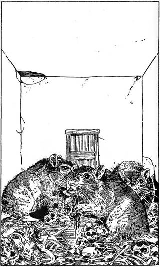
284.
Már megint te vagy? - szól az Útvesztő Irányítója, nyilván dühös, amiért háborgatod. - Zavarsz az összpontosításban. Takarodj innen! - Elkezded magyarázni, hogy csupán egy tévedés miatt kerültél újra ide, de ahogy kinyitod a szád, az Öreg egyetlen fagyos pillantása hallgatásra késztet. Úgy döntesz, ráhagyod. Távozhatsz a nyugati ajtón, lapozz a 46-ra, vagy a délin, lapozz a 392-re.
285.
Az út jobb oldalán (keletre) egy sokat használt ajtót pillantasz meg. Füledet a kulcslyukra téve hallgatózol, és hallod, hogy egy ember bent segítségért kiáltozik. Ha kinyitod az ajtót, lapozz a 213-ra, ha továbbmész, lapozz a 314-re.
286.
A szűk lépcsősort a sziklába vájták, vagy húsz lépcsőfok vezet lefele. Aljában az út egy hatalmas nyitott terembe vezet. A helyiség rothadó hús szagától bűzlik. A szag olyan rettenetes, hogy legszívesebben visszafordulnál. Átkutathatod a tetemeket, vagy lábujjhegyen átsurranhatsz a termen. Mit fogsz csinálni?
Átkutatod az első tetemet? Lapozz a 294-re.
Átkutatod a második tetemet? Lapozz a 275-re.
Átkutatod a harmadik tetemet? Lapozz a 148-ra.
Lábujjhegyen átosonsz a szobán? Lapozz a 107-re.
287.
Az út jócskán halad tovább, azután egy sziklába vágott lépcső aljához ér. Felkapaszkodsz rajta, és egy rozsdás sarokvasakon nyugvó faajtóhoz érsz. Fülelni kezdesz, amikor furcsa, kaparászó hangot hallasz. Megpróbálkozol az ajtónyitó gombbal, mire az ajtó csikorogva kitárul. Egy csupasz szobába lépsz, a padlót csontok borítják. A szemben lévő falból is nyílik egy ajtó. A csontokat három Óriás Patkány rágcsálja, s csak azért hagyják abba tevékenységüket, hogy rád bámuljanak belépésedkor. Mindnyájan legalább egy méter hosszúak, tépett bundájukon látszik, harcos természetűek. Meg kell küzdened velük, ha át akarsz menni a szobán, mert nem vitás, szerintük benned ízletes falatra akadtak. Ha kalandod során már találtál sajtot, lapozz a 32-re, ha nem, lapozz a 309-re!
288.
Lapozz a 182-re.
289.
Őrjöngve nézel körül a szobában, de semmit sem látsz, ami a segítségedre lehetne. Tekinteted hirtelen megállapodik egy csomag kártyán, amivel az Öreg akkor játszadozott, amikor beléptél. Eszedbe jutnak azok a szóbeszédek és történetek, melyeket a falusiak meséltek neked! A Varázsló ereje, a kártyáiban rejlik. A Varázsló is észreveszi érdeklődésed a pakli kártya iránt, és mindketten az asztal felé rohantok. Te érsz oda előbb. - Hagyd békén azokat! - sikoltja - vagy kivívod magad ellen legsötétebb haragomat! - Te hátralépsz, és lámpásod lángjával meggyújtod az egyik lapot. A Varázsló vadul felkiált, és elkezd könyörögni, hogy ne nyúlj a kártyákhoz. Az egyik lapot a másik után gyújtod meg, miközben a Varázsló alakja fogyni kezd. Amint az utolsó kártya is elhamvadt, egy megtört ember áll előtted. - A könyvem! - hörgi, miközben megpróbálja a szemközti falban lévő ajtót kinyitni. Karddal a kezedben odarohansz, és rátámadsz. Küzdj meg vele!
Varázsló ÜGYESSÉG 7 ÉLETERŐ 12
Ha győztél, lapozz a 396-ra.
290.
Lapozz a 198-ra.

291.
Egy kelet-nyugati folyosó közepén állsz. Keletre zsákutca van. Ha akarod, átvizsgálhatod - lapozz a 315-re. Nyugatra egy már ismerős útelágazás nyílik. Ha erre indulsz, lapozz az 52-re. Egy másik, egészen rövidke átjáró észak felé kanyarodik, és egy hatalmas faajtóhoz vezet. Ha ki akarod nyitni, lapozz a 227-re.

292.
Északi irányban az út egy vastag faajtónál ér véget. Hallgatózol, de nem hallasz semmit. Nincs más választásod, be kell nyitnod az ajtón. Így is teszel. Egy nagy, négyszög alakú szobába lépsz. Körülvillantod lámpásod fényét a szobán, de nem látsz mást, csak a falakon lévő freskókat, amikor lámpásod váratlanul kialszik. Megpróbálod újra meggyújtani, de nem kap lángra. A sötétben félelmetes hangok szólalnak meg egymás után. Vonyítások, sikolyok, kiáltások, jajgatások válnak egyre erősebbé és erősebbé, mígnem annyira elviselhetetlen, olyannyira, hogy be kell fognod a füledet. Van nálad Kék Gyertya? Ha igen, lapozz a 239-re, ha nincs, a 40-re!
293.
Visszaérkezel az útelágazáshoz, és mész egyenesen tovább kelet felé. Lapozz a 113-ra.
294.
5 aranypénzt találsz a holttest zsebeiben. Vezesd rá a Kalandlapra, a leletért 1 Szerencse pontot kapsz. Most, ha akarod:
Átkutathatod a második holttestet. Lapozz a 275-re.
Átkutathatod a harmadik holttestet. Lapozz a 148-ra.
Mész tovább észak felé, és lábujjhegyen átvágsz a szobán. Lapozz a 107-re.
295.
Nem találsz átjárókat, viszont kutatásoddal magadra vontad egy lény figyelmét, hallod, hogy a folyosón valami egyenesen feléd tart.
Hogy megtudd, miféle kóborló szörnyeteggel hozott össze a sors, lapozz a 161-re! Meg kell küzdened vele, és ha legyőzted, mehetsz tovább utadon. Lapozz a 48-ra! Mivel a 161-es pontnál nem közlik, merre kell továbbhaladnod, jegyezd le a 48-as számot, hogy tudd, hová menj a 161-es után!

296.
A dobozban egy kicsi, bőrkötéses könyvet találsz. Címe szerint: A beste Sárkányok legyőzetésének módozatai - ez a sárkányok elleni harc kézikönyve. Kinyitod, és olvasni kezded. Szerencsére anyanyelveden írták, valószínűleg ezért nem értették meg az Orkok, különben jobban őrizték volna ezt a kincset. A könyvet Farrigo Di Maggio írta kézírással, apró betűkkel. Életmű ez a könyv, melyből megtudod, hogyan alkotta meg Di Maggio a Sárkányok Tüze elleni varázsigét, mellyel a gonosz teremtményeket le lehet győzni. Kiderül, hogy élete utolsó éveiben a szerző ugyan tökéletesítette e varázsigét, de mire elkészült vele, már túl öreg volt ahhoz, hogy hasznát vegye. Így aztán könyvét bezárta egy ládába, és elrejtette a Tűz- hegy gyomrában, mivel attól tartott, rossz kezekbe kerül. Az utolsó oldalon ezt olvasod:
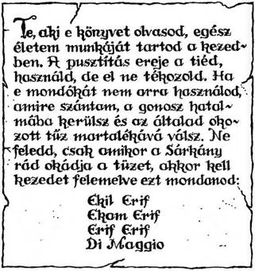
Lassan, halkan mondod magadnak ezeket a szavakat. Hirtelen az oldalakból fény csap ki, és amint az kihuny, már semmi sincs a lapokon. Még egyszer elismétled magadban a varázsigét, hogy megtanuld, majd távozol. Lapozz a 42-re.
297.
Egy kelet-nyugat irányú folyosón vagy, mindkét végén T alakú elágazás. Ha nyugat felé mész, lapozz a 150-re, ha keletnek indulsz, lapozz a 256-ra.
298.
A híd síkos a felcsapódó hullámoktól. Egy helyen megcsúszol egy csomó nedves mohán, ami a gerendákat borítja.
Dobj egy kockával! Ha 6-ost dobsz, ez azt jelenti, hogy a hídról a vízbe csúszol, és már úszhatsz is a legközelebbi part felé. Lapozz a 86-ra. Minden más szám szerencsés, visszanyered egyensúlyodat, és sikeresen átjutsz az északi partra. Lapozz a 7-re.
299.
Az út egy darabig keletnek halad, de azután északnak fordul. Sokáig mész ebben az irányban. Ha akarsz, az út mentén kereshetsz titkos átjárókat, lapozz a 260-ra, vagy egyszerűen folytathatod utad tovább észak felé, lapozz a 359-re.

300.
Az út keleti oldalán egy újabb ajtót veszel észre, mely fémből készült. Ennél hallgatózva gyötrelmes sikolyok hangját hallod kiszűrődni. Ha megpróbálod kinyitni az ajtót, lapozz a 102-re, ha úgy döntesz, hogy erről a szobáról tudomást sem veszel, és mész tovább a folyosón, lapozz a 303-ra.
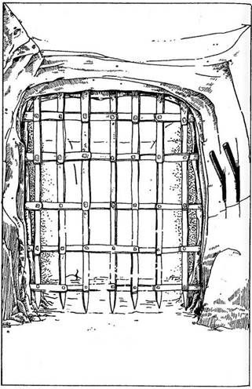
301.
A folyosó nyugati oldalán, tőled balra egy durván faragott faajtó áll, mely mögül reszelős hang szűrődik ki, olyan, mintha valaki bent hortyogna. Ha kinyitod az ajtót, lapozz a 82-re, ha továbbhaladsz északnak, lapozz a 208-ra.
302.
Lapozz a 198-ra.
303.
Az út egy kelet-nyugati átjárónál ér véget. Egy erős vasrács zárja le, úgyhogy nem mehetsz tovább. Nincs olyan erő, amely szét tudná zúzni. A falon, tőled jobbra, két fogantyú van, és úgy tűnik, közük lehet a vasrács mozgatásához. Melyiket húzod meg?
A jobb oldali kart? Lapozz a 128-ra.
A bal oldali kart? Lapozz a 243-ra.
304.
Az Öreg megdühödik rád, mert megölted a kutyáját. Szeme elszürkül a haragtól. Lassan felemelkedik ültéből, s ahogy feláll, alakja nőni kezd. Előtted változik át. Arcát és karját szőr lepi el, orra megnyúlik, kutyaszerűvé válik. Fogai tűhegyesek lesznek. Ez egy Farkasember, és feléd közeledik. Elmenekülni csak a mögötted lévő ajtón tudsz, déli irányba. Lapozz a 66-ra. Máskülönben meg kell vele küzdened.
Farkasember ÜGYESSÉG 8 ÉLETERŐ 8
Ha legyőzted, lapozz a 203-ra.
305.
Tedd próbára Szerencséd! - háromszor egymás után. Ha minden alkalommal szerencsés vagy, eljutsz a szemben lévő ajtóhoz, és távozhatsz. Lapozz a 162-re. Az első balszerencsés dobásnál rálépsz egy kéz alakú csempére, és lapozz a 108-ra.
306.
Még mindig nem találsz titkos átjárókat. De amint mész tovább lefelé a folyosón, egy lény körvonalait pillantod meg. Hogy megtudd, mi az, ami feléd közeledik, lapozz a 161-re. Felkészülhetsz a harcra.
Ha legyőzted a szörnyet, továbbmehetsz. Lapozz a 291-re. Írd le ezt a számot, hogy tudjad, hová kell visszatérned!

307.
Az út tekereg, kanyarog, és végül egy tömör vasajtónál ér véget. Hallgatózol, de semmi nesz. Ha megpróbálod kinyitni az ajtót, lapozz a 134-re, ha visszamész az elágazáshoz, lapozz a 87-re.

308.
Egy útkereszteződésnél állsz. Az út csak néhány méteren át tart nyugatnak, utána északnak fordul. Északi irányban az utat egy ajtó zárja le. Kelet felé az út továbbhalad, de végül délnek fordul. Déli irányban egyenesen haladhatsz, ameddig a szem ellát. Merre indulsz?
Nyugatnak? Lapozz a 187-re.
Északra? Lapozz az 54-re.
Délre? Lapozz a 160-ra.
Keletre? Lapozz a 354-re.

309.
Kardot rántasz, és várod, hogy a Patkányok rád ugorjanak. Amint vezérük vetődni készül, nagyot üvöltesz, és feléje lendülsz. Kiáltásod elijeszti a másik kettőt, néhány lépésnyit visszairamodnak. Küzdj meg a Patkányokkal, egyikkel a másik után!
ÜGYESSÉG ÉLETERŐ
Első Patkány 5 4
Második Patkány 6 3
Harmadik Patkány 5 5
Ha győztél, átmehetsz az északi falban lévő ajtón. Lapozz a 124-re.
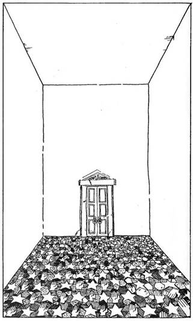
310.
Itt valami nincs rendben. Jókora csapást mértél rá, de úgy látszik, fel sem veszi a sérülést. Rájössz, ez is egy Örökéltű Lény, akit közönséges fegyverrel nem lehet megsebezni. Választhatsz másik fegyvert, s ezzel vagy régi fegyvereddel a kezedben lapozz a 211-re!
311.
Az út egy ajtónál ér véget. Hallgatózol, de semmit sem hallasz. Megpróbálod elfordítani az ajtónyitó gombot, az ajtó kitárul, és egy nagy, négyszög alakú szobába lépsz. A helyiség teljesen üres, padlóját csempékből kirakott mozaik fedi. Két minta, a kéz és a csillag alakú kimagaslik a padlóból. Továbbmenni csak a szemben lévő ajtón keresztül lehet. Mit csinálsz?
Átmész a szobán az ajtóhoz? Lapozz a 305-re.
Csak a csillag alakú csempékre lépsz? Lapozz a 178-ra.
Csak a kéz alakú csempékre lépve közelítesz az ajtóhoz? Lapozz a 108-ra.
312.
Egy hosszú, szűk folyosót követsz, amelyik északnak halad, azután nyugatnak fordul, majd megint északnak, és végül egy útkereszteződésnél találod magad. Lapozz a 308-ra.
313.
Megvizsgálod a testet. Szegény ördög úgy járt, akárcsak te, de koponyája gyengébb lévén, összetört a bunkó csapása alatt. Bőrpáncélzatot visel, amely nem jobb a tiednél. Egyik kezében fából készült pajzs, másikban acélpengéjű kard. Zsebeiben 8 aranypénz, nyakában egy láncon ezüstkereszt. A fent felsorolt tárgyak közül kettőt magaddal vihetsz. Jegyezd fel ezeket a Felszerelési Tárgyak rovatba, és lapozz a 221-re! 1 Szerencse és 1 ÜGYESSÉG pontot nyertél.
314.
Távolabb az úton, a keleti falban egy ajtót veszel észre. Erősen figyelsz, de semmi sem szűrődik ki. Ha kinyitod az ajtót, hogy átkutasd a szobát, lapozz a 223-ra, ha inkább folytatod az utadat, lapozz a 300-ra.
315.
Úgy látszik, a zsákutcában nincsenek titkos átjárók, de ha akarod, ezt még egyszer ellenőrizheted. Lapozz a 306-ra. Ha nem akarod újra ellenőrizni, lapozz a 291-re.

316.
A víz jéghideg. Úszni kezdesz, és észreveszed, hogy karcsapásaiddal magadra vontad egy örvénylő valami figyelmét. Bírod erővel és kitartással?
Dobj két kockával! Ha a dobott összeg egyenlő vagy kevesebb jelenlegi ÉLETERŐ pontjaidnál, azt hiszed, kibírod az északi partig, és vadul úszni kezdesz, lapozz a 151-re. Ha a dobott összeg nagyobb jelenlegi Életerődnél, ne kockáztass, inkább fordulj vissza a déli partra, lapozz a 218-ra. A parton elfogyaszthatod Élelmiszerkészleted egy részét.
317.
Levágod köteleiről a Törpét. Valóban, ahogy sejtetted, halott. Átkutatod a két Goblin zsebeit, és egy nagy darab, jó illatú sajtra bukkansz. Ha magaddal akarod vinni, tedd a hátizsákodba, és menj tovább észak felé. Lapozz a 303-ra.
318.
Az átjáró zsákutcában ér véget. Visszatérhetsz az elágazáshoz, lapozz a 85-re, vagy kereshetsz titkos átjárókat, lapozz a 228-ra.

319.
Hogy megtudd a titkát annak a tárgynak, amelyet másodjára találtál, lapozz a 221-re! Ha már mindkét tárgyat megvizsgáltad, lapozz a 81-re!
320.
Kirohansz a szobából, és becsapod magad mögött az ajtót. Észak felé indulsz, és valamivel távolabb egy hasonló ajtó mellett haladsz el. Lapozz a 363-ra.

321.
Lapozz a 169-re.
322.
A fiókok szögekkel, szegecsekkel, különféle fúrófejekkel és alkatrészekkel vannak tele. Az egyikben egy rézszínű kulcsot lelsz a 66-os számot vésték bele. Felkelti érdeklődésedet. Megtarthatod, ha Felszerelésed valamelyik darabját itt hagyod helyette. A változásokat vezesd be a Kalandlap megfelelő rovatába. Északról a zaj kezd erősödni. Az északi ajtóhoz lépsz, hogy megtudd, mi az. Lapozz a 96-ra.

323.
Néhány méter után egy újabb hármas elágazáshoz érsz. Mehetsz északnak, lapozz a 8-ra, vagy keletnek, lapozz a 255-re.

324.
Amint berobbansz az ajtón, az Öreg rád néz, de a legkevésbé sem zavartatja magát. Hirtelen eltűnik, majd újra megjelenik. Amint sarkon fordulsz, hogy szemmel tartsd, felkacag, de nem egy öregember reszketeg hangján, ez egy sokkal fiatalabb férfi zengő kacaja. Újfent eltűnik, és egy másik sarokban jelenik meg, rád bámul, és gonosz kacagásával gúnyol téged. Épp idejében fordulsz meg, hogy lásd, újra eltűnik. Ez alkalommal a levegőben jelenik meg feletted, és lassan ereszkedik le rád. Ahogy közeledik, elborzadsz a nézésétől. Lapozz a 358-ra.

325.
Fejedre helyezed a sisakot. Éppen jó rá. Valami elkezd izzani benned, és ez az izzás elárasztja egész testedet. Úgy érzed, olyan erős és mindenekelőtt olyan magabiztos vagy, mint még soha. A sisak varázserővel van megáldva, s ezentúl, amikor kockavetéssel meghatározod Támadóerődet, 1 ponttal mindig többet számolj, egészen addig, amíg a sisak a fejeden van. Ezt jegyezd fel a Kalandlapra, és térj vissza az elágazáshoz. Lapozz a 87-re.
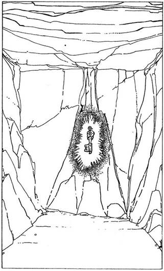
326.
Csupasz sziklafallal körülkerített szobába lépsz be. A szemközti falon egy aranykulcs függ. Úgy latod, másik kijárat nincs. Ha odamész a kulcsért, lapozz a 35-re, ha inkább visszatérsz az elágazáshoz, lapozz a 229-re.
327.
A földön heverő test a szemed láttára kezd el öregedni. Az arca ötvennek látszik, azután kilencvennek, majd száznál is jóval idősebbnek. Bőre szétfoszlik, szeme kifejezéstelenné válik. Valami megmozdul a teremtmény mellkasán. Ahogy a Vámpír maradványai elenyésznek, egy kicsi fekete arc tör ki a mellkasából. Olyan, mint egy apró, sötét cickány, de amint kiszabadítja magát és szétnyitja szárnyait, rájössz, hogy denevér. Rásuhintasz, de elrebben, és belevész a sötétségbe.
Gyorsan átkutatod az egész termet (ne feledd, van még néhány koporsó itt). Találsz harminc arany- pénzt, egy könyvet és egy Y alakú fapálcikát. Magaddal viheted ezeket a tárgyakat (vezesd rá a Kalandlapra), ha jelenlegi Felszerelésedből itt hagysz egy tárgyat.
A nyugati ajtón át távozhatsz. Ha éhes vagy, egyél Élelmiszerkészletedből, s adj 3-at Szerencse pontjaidhoz a Vámpír legyőzése miatt. Lapozz a 380-ra.

328.
Mindkét fadarab Y alakú és puha, mintha a folyó vetette volna partra őket. Ha a zsákodba teszed a fákat és távozol az északi ajtón keresztül, lapozz a 73-ra, ha maradsz, hogy megvizsgáld a kötelet, lapozz a 125-re. Ha magaddal viszed a fadarabokat, egy tárgyat a Felszerelésedből itt kell hagynod.
329.
Nekiindulsz, és egy észak-déli átjáró közepén találod magadat. Az út nyugati falán egy ajtó van, vele szemben egy út keletre vezet. Északra, néhány méternyire egy ajtót veszel észre. Déli irányban egy elágazást látsz. Melyiket választod?
A nyugati falban lévő ajtót? Lapozz a 157-re.
Az ajtót északi irányban? Lapozz a 392-re.
Keletre indulsz? Lapozz a 299-re.
Délre mész? Lapozz a 238-ra.
330.
A hordók áttetsző barna folyadékot tartalmaznak. Megszagolod. Rumszaga van. Megkóstolod, valóban rum. Két tenyeredet belemeríted, és nagyokat kortyolsz belőle. Eláll a lélegzeted tőle, a kutyafáját, ez aztán jó! Visszanyertél 6 ÉLETERŐ pontot, és 1-et adj hozzá a Szerencsédhez is! Lapozz a 81-re.
331.
A lény ember nagyságú, de hosszú karjai nagyon erősnek látszanak. Küzdj meg vele!
Troll ÜGYESSÉG 8 ÉLETERŐ 8
Ha győztél, mehetsz tovább északra. Lapozz a 287-re.
332.
Egy kelet-nyugat irányú folyosó keleti végénél állsz, utadat egy ajtó zárja el. Ha akarsz, átmehetsz rajta, lapozz a 329-re. Nyugat felé nézve az út északnak kanyarodik. Indulhatsz erre is, lapozz a 4-re.
333.
Ahogy a kardoddal a lényre sújtasz, kinyúl, és puszta kézzel megragadja a pengét. Fegyvered majdnem teljesen hatástalan a teremtmény rettenetes erejével szemben. Rádöbbensz erre, és pánikba esel. De tovább kell küzdened.
Vámpír ÜGYESSÉG 10 ÉLETERŐ 10
Ha legyőzted a Vámpírt, lapozz a 327-re! Ha megpróbálsz Elmenekülni (ezt csak akkor teheted meg, ha hat teljes Fordulót kiálltál), még szerencsésnek is kell lenned. Tedd próbára Szerencséd!
Ha szerencsés vagy, Elmenekülhetsz a nyugati ajtón keresztül - lapozz a 380-ra. Ha balszerencsés vagy, folytatnod kell a küzdelmet, további hat Fordulón át, mielőtt megpróbálkozhatnál újból Elmenekülni. Ha 11-et vagy 12-t dobtál és balszerencsés vagy (azaz jelenlegi Szerencse pontszámod 11-nél kevesebb), akkor lapozz a 224-re.
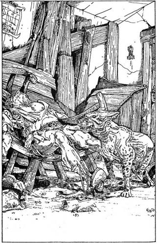
334.
Miközben beszélsz, az Öreg felemelkedik. - Ó, te jóisten, egy idegen! - kezdi. - Gyere, gyere csak beljebb, a bolt nyitva van. Mit adhatok neked? Mit szeretnél vásárolni? Mihez lenne kedved? Merre tartasz? Északnak? Nos?
Elmeséled az Öregnek a történetedet. Meghallgat, majd így válaszol. - Ó, igen, ebben az esetben kétségkívül szükséged van Kék Gyertyáim egyikére. Húsz arany az ára, de ha nem haragszol, csak készpénzt fogadok el. Persze tudom, hogy drága, de mi nem az manapság? Nemrég még ezeknek a gyertyáknak öt arany volt darabja, de te is tudod, hogy felment a gyertyaviasz ára a Hosszú Sötét Éjszaka után, ó persze, te valószínűleg nem is tudsz erről, nem idevalósi vagy. Ne is törődj vele, még mindig megéri ezt az árat. Lehet, hogy hamarabb lesz szükséged rá, mintsem gondolnád…
Ha veszel gyertyát, fizesd ki, és jegyezd fel a változásokat a Kalandlapon. Egy kicsit belefáradtál az állandó locsogásba. Hagyd el a szobát, és menj tovább északnak. Lapozz a 292-re.
335.
Lapozz a 182-re.
336.
Egy kicsi, büdös szobában vagy. Két ajtót látsz, az egyik nyugatra vezet, a másik, amin beléptél, délre. A helyiségben szétszórva bútorok, legtöbbjüket régi csónakok deszkáiból tákolták össze. A szobában semmi értékes nincs, kivéve egy a falon függő kulcscsomót. Egy evezős csónak feléből készített padon egy öreg, rongyos ruházatú ember fekszik hanyatt, és hangosan hortyog. Mellette rosszindulatúnak látszó, barna kutya hever. A szemei vörösek, fogai feketék. Belépéseddel felriasztottad, most gyanakodva méreget. Mélyről jövő morgás hallatszik torkából. Választhatsz:
Kilopakodsz a szobából a déli kijáraton? Lapozz a 66-ra.
Hangosan becsapod az ajtót magad mögött, s zavartan köhécselsz, hogy az Öreget felébreszd? Lapozz a 172-re.
Kirántott karddal átszökkensz a szobán, hogy ledöfd a kutyát? Lapozz a 249-re.
337.
Nem találsz titkos átjárókat, de amint a falakat tapogatod, egy kattanást hallasz. Elszédülsz és a földre rogysz. Amikor magadhoz térsz, a környezet különösnek tűnik. Lapozz a 267-re.
338.
Óvatosan megközelíted a szobrot. Valami elsurran a hátad mögött, hirtelen megfordulsz... de csak egy patkány. Megfogod az ékkövet, de az szilárdan ül a helyén. Megpróbálod a kardoddal kipiszkálni, de egyszer csak baljóslatú csikorgást hallasz. Rémülten látod, hogy a szobor mozogni kezd. Leugrasz, és kirántod a kardod. A Vas Küklopsz felemeli és feléd fordítja a fejét, majd lelép a talapzatról! Meg kell küzdened vele!
Vas Küklopsz ÜGYESSÉG 10 ÉLETERŐ 10
Ha győztél, lapozz a 75-re. Ha inkább Elmenekülsz harc közben, az ajtón keresztül visszarohanhatsz az elágazásig. Lapozz a 93-ra.
339.
A lakat elröpül, és néhány méternyire ér földet. Felemeled a nehéz fedelet, és szemed tágra nyílik, amint megpillantod, micsoda aranyló ragyogás árad belőle. Jó csomó aranypénz van benne. Az egyik sarkában kicsi, fekete üveg fekszik, valami folyadék van benne. A ládában van még egy selyemkesztyű is. De amint a kincseket bámulod, halk kattanást hallasz, és összerándulsz a fájdalomtól, amint egy kicsi hajítódárda vágódik a gyomrodba. Dobj egy kockával, és a dobott számot vond le ÉLETERŐ pontjaidból, hogy megtudd, milyen erős volt a méreg a dárda hegyén. Ha még mindig élsz, lapozz a 201-re!
340.
Különféle tárgyakkal próbálkozol Felszerelésedből, hogy szembeszegülj a festmény pillantásával, de egyik sem segít. Megpróbálkozhatsz a következőkkel, ha van hozzá Felszerelésed:
Kardoddal széthasíthatod a festményt. Lapozz a 388-ra.
Felmutathatsz egy drágakövet vele szemben. Lapozz a 31-re.
Belevághatsz egy facöveket. Lapozz a 241-re.
Megdobhatod egy darab sajttal. Lapozz a 45-re.
341.
Belépsz a szobába, és az öregember rád mered. Mentegetőzhetsz, próbálod elmagyarázni, hogy eltévesztetted az utat, és távozhatsz a nyugati ajtón, lapozz a 46-ra, vagy a déli ajtón, lapozz a 392-re. Esetleg megpróbálkozhatsz beszélgetni vele. Ha így döntesz, lehetsz udvarias, lapozz a 220-ra, vagy követelheted, hogy válaszoljon kérdéseidre, lapozz a 191-re.
342.
A Farkasember a földre rogy. Átkutatod a testét, és 2 aranypénzt találsz, az volt az utolsó átkelés díja. Megátkozod, amiért tőled többet kért. Jegyezd fel a 2 aranyat a többihez, és evezz át a folyón. 2 Szerencse pontot kaptál. Kikötöd a csónakot az északi parton, és visszanézel a holttestre. De az eltűnt! Lapozz a 7-re.
343.
Az ajtó kiszakad, és te fejjel előre zuhansz be a szobába. A szíved a torkodban kezd el dobogni, amikor észreveszed, nem a padlóra zuhansz, hanem valamiféle kútba. Szerencsére a kút nem különösebben mély, alig kétméternyire talajt érsz. 1 ÉLETERŐ pontot veszítesz a horzsolásaid miatt, de mássz ki és menj nyugat felé. Lapozz a 92-re.
344.
Hüvelyébe dugod a kardod, és a vízhez mész. Biztonságos-e átúszni rajta? Bár veszélynek közvetlen jelét sem a vízben, sem a parton nem látod, út sincs, ami az északi partra vezetne. Egyszer csak egy csillogó kardot pillantasz meg, néhány lépésnyire hever a folyó medrében. A vízbe gázolsz, hogy kivedd. Könnyű a kezedben, sokkal kevésbé ormótlan, mint a sajátod, és éles a pengéje. Ez a csodálatos fegyver 1 ÜGYESSÉG pontnyi pluszt jelent mindig, ha ezt használod. Jegyezd fel a Kalandlapra. Egy titokzatos hang azt súgja neked, hogy saját kardodat dobd a folyóba. Ha megteszed, lapozz az 56-ra, ha mindkét kardot megtartod, lapozz a 153-ra.
345.
Keleti irányban követed a folyosót, mely néhány méter után északnak fordul. Hamarosan újabb elágazáshoz érsz, ahonnan mehetsz tovább egyenesen, lapozz a 381-re, vagy jobbra fordulva kelet felé egy úton, mely hamarosan északnak kanyarodik, lapozz a 311-re.
346.
A kártyaszerencse lehet veled és ellened is. Két választásod van. Dobj két kockával! Ha a szám páros, ennyi aranyat vesztettél, ha nincs ennyid, akkor az összes nálad lévőt. Ha a szám páratlan, akkor ennyi aranyat nyertél.
Ha akarod, a szerencsédet is próbára teheted, azaz játékunkban Tedd próbára Szerencséd! Ha szerencsés vagy, dobj két kockával, hogy megtudd, mennyi aranyat nyertél, ha balszerencsés vagy, a két kocka elárulja, mennyi aranypénzt vesztettél.
A megfelelő változásokat vezesd rá a Kalandlapra. Ha nyertél, 2 Szerencse pontot kapsz. Írd fel, és lapozz a 131-re.
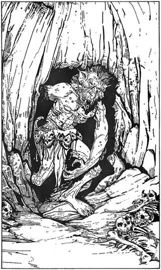
347.
Lapozz a 182-re.
348.
Egy kútban Vagy, egy kicsit megsérültél, de szerencsére nem súlyosan. Amint lábra tudsz állni, körülnézel, és két átjárót is észreveszel. Délre a rövid út egy kis kamrába vezet, a másik folyosó északnak tart. Kissé aggaszt a zuhanás okozta seb, de még ennél is jobban az a morgás, amely a kamrából hallatszik. Mielőtt még összeszedhetnéd gondolataidat, egy hatalmas ronda fej tűnik fel a sarkon, és egy Troll kapaszkodik ki kamrájából. Bokád kificamodott, nemigen tudsz gyorsan mozogni, de a Troll már harcra kész. Szembe kell nézned a bestiával. Lapozz a 331-re. De ha van nálad, megihatod a Láthatatlanság Italát, lapozz az 51-re.
349.
Néhány métert lefelé haladsz a folyosón, és zsákutcába kerülsz. Vagy visszafordulsz az útkereszteződéshez, lapozz a 267-re, vagy átkutatod a zsákutca végét, lapozz a 30-ra.
350.
Ahogy a kavargó, örvénylő víz körülvesz, érzed, rengeteg kicsiny hal támad rád. Gonosz harapásaikkal szinte szétmarják, -szabdalják a testedet, és ekkor ráébredsz, életveszélyes Piranhák vesznek körül.
Ha a Krokodillal vívott küzdelem során megsebezted a hüllőt, szerencséd van, mert a halak többsége a vérző állatra támad. Ha nem sebesítetted meg a Krokodilt, a halak bármelyiketekre támadhatnak. Dobj egy kockával. Ha 1-est vagy 2-est dobsz, a Piranhák többsége rád támad. Ha ennél nagyobbat dobsz, a halak többsége a Krokodilra ront.
Vedd úgy, mintha egy teremtménnyel kellene megküzdened. Ha a fentiek szerint a halak többsége rád támad, így indul a csata:
Piranhák ÜGYESSÉG 5 ÉLETERŐ 5
Ha viszont a többség a Krokodillal van elfoglalva, neked csak a maradékkal kell megküzdened.
Piranhák ÜGYESSÉG 5 ÉLETERŐ 1
Ha győztél, végre partra úszhatsz, lapozz a 7-re. Ehetsz Élelmiszeredből, és szerencsédért visszakapsz 1 Szerencse pontot.
351.
Visszaértél az elágazáshoz, és keletnek fordulsz. Lapozz a 76-ra.
352.
Közelítesz hozzá, szemét rád mereszti. Tekintetétől gyöngülni kezdesz. 1 ÉLETERŐ pontot veszítesz. Fokozatosan gyengül saját akaratod. Ha megpróbálod kihúzni a kardodat, hogy megküzdj vele, lapozz a 74-re, ha a zsákodban keresel valami mást, amivel megtámadhatod, lapozz a 279-re.
353.
Hirtelen az Öreg felé szúrsz, ahogy kitárt karokkal feléd ugrik, és kardod átjárja mellét. Káromkodsz, amikor rájössz, nem is akart bántani. Vad izgatottsága pusztán annak tudható be, hogy a hosszú fogság után végre kiszabadult. Most már nem tudhatsz meg tőle semmit azokról a veszélyekről, melyek még rád leselkednek. Folytasd utadat a folyosón. Lapozz a 314-re.
354.
Egy útkanyarulatnál állsz, ahonnan nyugatra és délre egyaránt indulhatsz.
Ha nyugatra indulsz, lapozz a 308-ra.
Ha délnek tartasz, lapozz az 52-re.
Ha titkos átjárók után kutatsz a nyugatra vezető úton, lapozz a 14-re.
Ha titkos átjárókat keresel a délre tartó úton, lapozz a 234-re.
355.
A fal mentén tapogatózol, de nincs mód a menekülésre. A zaj már olyan erős, hogy sikoltozol fájdalmadban. Vonj le 1 pontot Ügyességedből. Megpróbálkozhatsz a keleti, lapozz a 181-re, vagy az északi fallal, lapozz a 265-re.
356.
Az öregember rád néz, fogadja köszönésedet, és hellyel kínál. Leülsz az asztalhoz, és észreveszed, merőn bámul. Tekintete hipnotikussá válik, de még idejében észleled, és elkapod a szemed róla. Szólásra nyitja száját, és meglepetésedre egy aggastyán hangja helyett egy erőteljes férfihangot visszhangzik a szoba, úgy, mintha maguk a falak szólaltak volna meg. Újra az öregre nézel, és látod) amint a szemed
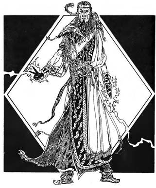
láttára alakul át. Termete megnő, cafatokká szakadt rongyai aranyból és bársonyból készült palásttá válnak. Fekete szemét rád emeli. Már várt rád... Lapozz a 358-ra.
357.
Az út jó darabig északnak halad, azután szélesedni kezd, és egy hatalmas, durva falú barlangba ér. Úgy látod, nem vezet rajta keresztül semmilyen folyosó. Ha visszatérsz az elágazáshoz, lapozz a 269-re, ha belépsz a barlangba, lapozz az 57-re.
358.
Ebben a csatában szükséged lesz erőd és ravaszságod minden tartalékára. Ellenfeled eltűnt, és most a szoba túlsó végében bukkan fel egy ajtó előtt, amin két lakat van. Hogyan közelíted meg?
Kardodat szorosan megmarkolva előrenyomulsz? Lapozz a 142-re.
Átnézed Felszerelésed, valami más fegyvert keresve? Lapozz a 105-re.
Körülnézel a szobában, támadásra vagy védekezésre alkalmas eszközt kutatván? Lapozz a 389-re.
359.
Útkereszteződésnél állsz.
Északra indulsz? Lapozz a 190-re.
Nyugatra mész? Lapozz a 385-re.
Délre tartasz? Lapozz a 94-re.
Keletre fordulsz? Lapozz a 121-re.
360.
Az ajtó nagyot dörrenve becsapódik mögötted. Egy észak felé vezető folyosón találod magad. Ezen mész egy darabig, azután az út nyugatnak kanyarodik. Kicsit később véletlenül ráakadsz egy kis nyílásra az északi falban, és úgy döntesz, átbújsz rajta. Lapozz a 89-re.
361.
Lekapod a kulcsot a szögről. Megnézed, a kulcsba a 125-ös számot vésték. De a tüdőd majd szétrobban. Dobj két kockával! Ha a dobott összeg egyenlő vagy kevesebb, mint ÜGYESSÉG pontszámod, átjutsz a szobán, eléred az ajtót. Lapozz a 136-ra.
Ha a dobott összeg több, mint jelenlegi ÜGYESSÉG pontszámod, kénytelen leszel levegőt venni és mérges gázt nyelni. Ezzel 2 ÜGYESSÉG és 3 ÉLETERŐ pontot veszítesz; de közben rohanj az ajtóhoz. Lapozz a 136-ra.

362.
Ahogy a falakat tapogatod, az út mentén, a nyugati falban egy rejtekajtó tárul fel előtted. Lapozz a 177-re.
363.
Továbbhaladva az úton jobbra egy hasonló ajtót találsz. Megállsz előtte, és bentről vérfagyasztó éneket hallasz! Ha bemész a szobába, hogy kiderítsd e hangok kibocsátóját, lapozz a 370-re, ha továbbmész, lapozz a 42-re.
364.
Amint megnyomod a gombot, a kicsiny kőajtó kinyílik. Ha úgy döntesz, hogy inkább továbbmész az útkereszteződéshez, lapozz a 256-ra, ha bemész az ajtón, lapozz a 373-ra. Gyorsan kell döntened, mert az ajtó egy percen belül magától becsapódik.
365.
Az Orkok egyesével támadnak rád.
ÜGYESSÉG ÉLETERŐ
Első Ork 6 4
Második Ork 5 3
Harmadik Ork 6 4
Negyedik Ork 5 2
Ötödik Ork 4 4
Ha te győzöl, lapozz a 183-ra. Ha inkább Elmenekülsz a csata során, lapozz a 237-re, de ne feledd levonni magadtól az ezért járó büntetéspontokat!
366.
Haladsz tovább az észak felé tartó úton. Jó néhány méter után az út egy éles kanyart vesz keletnek. Mész tovább keletnek, mígnem egy szűk átjáróhoz érsz az út északi oldalán. Ha átmész rajta, lapozz a 89-re, ha inkább kelet felé folytatod az utadat, lapozz a 62-re.
367.
Az út egy újabb elágazáshoz ér. Ha nyugatra fordulsz, lapozz a 235-re, ha inkább keletre mész lapozz a 323-ra.
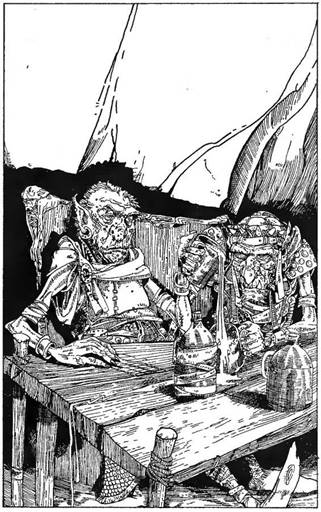
368.
A Varázsló kacagása visszhangzik a teremben. - Majd elválik, kettőnk közül ki az egér! - kiáltja, és kezét a levegőbe emeli. Pattint egyet az ujjával, s tenyeréből kék lángcsóva csap le rád. 3 ÉLETERŐ pontot veszítesz. Valami mást kell megpróbálnod.
Kardot rántasz és rátámadsz? Lapozz a 142-re.
Keresel egy alkalmas eszközt a hátizsákodban? Lapozz a 105-re.
369.
Lenyelsz egy keveset a folyadékból. Lapozz a 109-re.
370.
Az ajtó kinyílik, és egy kis, rendetlen, piszkos szoba tárul eléd. Az egyik sarokban szalmazsák hever. A helyiség közepén faasztal, rajta gyertya, reszkető fénye bevilágítja a szobát. Az asztal alatt egy apró doboz. Az asztal körül kér bibircsókos bőrű, bőrpáncélt viselő kicsi lény ül. Valami grogfélét iszogatnak. Érkezésedkor feltápászkodnak, de mozgásukon látszik, rettenetesen berúgtak. Ha kivont karddal rájuk veted magad, lapozz a 116-ra, ha gyorsan becsapod az ajtót és visszaszaladsz a folyosóra, lapozz a 42-re.
371.
Jelenleg biztonságban vagy, átvizsgálod a barlangot, és találsz egy utat, amely továbbmegy nyugat felé. Lapozz a 274-re. Ehetsz és pihenhetsz is, mielőtt folytatnád utadat. 3 Szerencse pontot kapsz a Sárkány legyőzéséért.
372.
A csata elkezdődik!
ÜGYESSÉG ÉLETERŐ
Ork Törzsfőnök 7 6
Szolga 7 3
Küzdj meg velük, egymás után! Ha legyőzted őket, lapozz a 21-re.
373.
Egy észak-déli átjáró déli végénél vagy egy zsákutcában. Ha elindulsz észak felé, egy útkereszteződéshez fogsz érni. Lapozz a 85-re.
374.
A Csontvázak nem vesznek észre, és eltűnnek a Csónakházba vezető ajtó mögött. Megkönnyebbülten felsóhajtasz, és elindulsz a folyosó északi végén lévő ajtóhoz. Mielőtt útra kelsz, ehetsz, ha akarsz, s adj 2 pontot Szerencsédhez, amiért elkerülted a Csontvázakat. Lapozz a 207-re.
375.
Visszajutsz az elágazáshoz, és ez alkalommal észak félé indulsz. Lapozz az 5-re.
376.
Összeszedheted az asztalon lévő összes rézpénzt. Négy aranyat érnek! Most már nyugodtan távozhatsz. Lapozz a 291-re. Pihenj és harapj valamit, mielőtt továbbmész, persze csak ha akarod! 3 Szerencse pontot nyertél.
377.
Amint kirántod a kardod, a Szárnyas Gremlin felröppen és rád támad. Az Öreg a könyvespolchoz rohan, megérint egy könyvet, és elmenekül a kitáruló rejtekajtón keresztül. De kedvenc állatkájával meg kell küzdened.
Szárnyas Gremlin ÜGYESSÉG 5 ÉLETERŐ 7
Ha győztél, lapozz a 196-ra.

378.
Véres kardodat a matracba törlöd. A zöld vér nyálkás foltot hagy a szalmán. Az asztalhoz mész, és fintorogva lépkedsz át a testeken, ezeknek a lényeknek rém büdös szaguk van. Felkapod a dobozt az asztal alól, hogy megvizsgáld. Durva vasalású kis faládika, fedelén egy réz névtábla, melyre a Farrigo Di Maggio nevet vésték. Kinyithatod a dobozt, lapozz a 296-ra, de úgy is dönthetsz, hogy itt hagyod és távozol, lapozz a 42-re.

379.
Nekikészülsz, hogy a ládára sújts, miközben a mennydörgő zaj egyre erősödik. A magasba emeled a kardod, de amint a penge megközelíti a dobozt, egy hangrobbanás süketít meg. A helyiség egyik sarkából villám csap ki, átcikázik a levegőn, egyenest a kard- markolatnak, s te döbbenten támolyogsz keresztül a szobán.
Tedd próbára Szerencséd! Ha szerencsés vagy, kardod darabokban hever ugyan a földön, de sikerült elengedned a markolatot, mielőtt a villám belecsapott volna. Ha balszerencsés vagy, elszenesedett maradványaid egy kis fekete körvonalat képeznek a padlón. Legközelebb meg ne próbálj rácsapni a ládára!
Ha szerencsés voltál, kereshetsz kulcsokat a hátizsákodban. Lapozz a 139-re.

380.
Egy szűk, kelet-nyugati folyosón állsz. Nyugat felé nézve egy útkereszteződést látsz, és odamész. Lapozz a 37-re.

381.
Az út egy vassal szegélyezett faajtónál ér véget. Különböző feliratok díszítik az ajtót, de egyikből sem értesz semmit. Fülelsz, de csend van. Kinyithatod az ajtót, lapozz a 84-re, vagy visszatérsz az elágazáshoz, lapozz a 280-ra.

382.
Felmutatod a Küklopsz Szemét, s a drágakő tompán izzani kezd. Rámutatsz a kővel, mire a Küklopsz sikoltozni kezd. Egy sarokba hátrál, mikor az ékkő egy fénysugarat lövell ki. Ahogy a fény rávetődik ellenfeledre, az a földre hanyatlik, és figyelemre méltó változáson megy keresztül. Zsugorodni kezd, és a szemed láttára öregszik meg. Bőre ráncossá válik, majd megrepedezik, hamarosan csak egy alaktalan kupac marad a testéből. Néhány perc múlva a drágakő izzása abbamarad. Most már megközelíted az élettelen rongycsomót, mindössze ennyi maradt belőle. Lapozz a 396-ra.

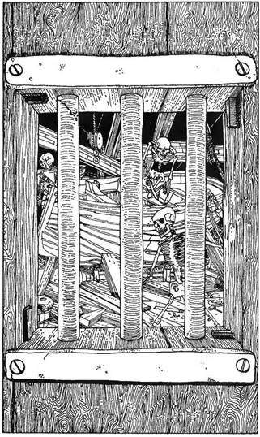
383.
A bejárat felett felirat: Csónakház. Az ajtó erősen be van zárva, de egy kis rácsos ablakon bepillanthatsz. Egy csomó Csontváz-embert veszel észre, valami csónakszerűséget építenek. Gyors, rángatózó mozdulatokkal dolgoznak, mozgásuk akár egy rovar.
Ha van egy Csónakház feliratú kulcsod, lapozz a 80-ra!
Ha megpróbálod betörni az ajtót, lapozz a 264-re.
Ha visszafordulsz a folyópartra másik útvonalat keresni, lapozz a 129-re.
384.
Az ajtó egy folyosóra nyílik, ezen haladsz észak felé. Rövidesen egy kanyarhoz érsz, és keletre mész tovább. Pár méter után egy elágazáshoz érsz, ahonnan fordulhatsz északnak (lapozz a 262-re) vagy keletnek (lapozz a 307-re).
385.
Néhány lépést teszel nyugat felé, azután az út északnak kanyarodik. Kicsivel odébb egy elágazáshoz érsz. Mehetsz dél felé, lapozz a 114-re, vagy nyugatnak, lapozz a 297-re. Északi irányban az út hamarosan zsákutcába torkollik. Ha erre akarsz menni, lapozz a 398-ra.
386.
Felmászol a tutajra, és megpróbálsz átcsáklyázni a folyón. Nehezen haladsz. A folyó közepén a tutaj mintha megelevenedne, elkezd vészesen hánykolódni. Rádöbbensz, fel akarja borítani saját magát, hogy a vízbe vessen. Erődben és szerencsédbe bízva megpróbálhatod, hogy kitartóan tovább csáklyázz az északi part felé, lapozz az 55-re, ha nem, ugorj a folyóba, és ússz vissza a déli partra, lapozz a 166-ra.
387.
Kipróbálod a kulcsokat, de egyik sem fordul el. Épp a harmadikkal kísérletezel, amikor kis csappantyúk kattannak, és utolsó emléked, amit észlelsz, hogy fájdalom hasít a testedbe. Három apró hajítódárda fúródik beléd. Gyorsan ható méreg van mindegyik hegyén. Kalandod itt véget ért.
Nehogy még egyszer ezt a kulcskombinációt használd, ha legközelebb erre tévedsz!
388.
Kardod kiröpül a kezedből, a levegőbe emelkedik, és már félre is kell ugranod, ahogy rád zuhan. Végighorzsolja az arcodat, amint leesik. 1 ÉLETERŐ pontot veszítesz. Úgy döntesz, jobban jársz, ha távozol. Felkapod kardodat, lapozz a 90-re. A Varázslótól való félelmed miatt vonj le 1 ÜGYESSÉG pontot is.
389.
Tedd próbára Szerencséd! Ha szerencsés vagy, lapozz a 289-re, ha balszerencsés vagy, a 112-re.
390.
A Ghoul rángatózva meghal lábaid előtt. Átkutatód a testét de csak jelentéktelen dolgokat lelsz. Többek között egy pár fülbevaló (1 Arany értékű) is van az egyik zsebében. Ezt magaddal viheted. Ha még nem kutattad át az első holttestet, most megteheted. 5 aranyat találsz a zsebében, ez is a tied lehet. Megállhatsz egy kicsit pihenni és enni. 2 Szerencse pontot kapsz, amiért megölted a Ghoult. Ezek után mehetsz tovább északnak, lapozz a 120-ra, vagy átkutathatod a második holttestet, lapozz a 393-ra.
391.
Egy észak-déli folyosó déli végénél vagy. Észak felé nézve egy utat látsz, a keleti falról vezet lefele. Mit teszel?
Felkapaszkodsz ezen az úton? Lapozz az 52-re.
Útközben észak felé megpróbálsz titkos átjárókat keresni? Lapozz a 362-re.
Délnek indulsz, azután a kanyart követve nyugatra mész? Lapozz a 48-ra.
392.
Egy észak-déli folyosón vagy. Északra az út egy nagy faajtón vezet át. Ha erre mész, lapozz a 206-ra, de mehetsz délnek is, és akkor lapozz a 329-re.
393.
Átkutatod a zsebeit ennek a halottnak is, és 8 aranyat találsz, meg egy folyadékkal teli üveget és egy régi pergamendarabot. Ezeket magaddal viheted. Elolvasod most a pergament, lapozz a 212-re, vagy a folyadékkal próbálkozol, lapozz a 369-re.
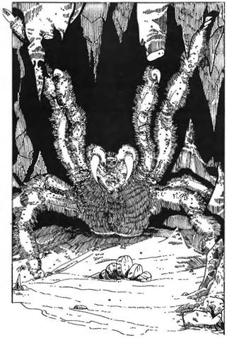
394.
A csizmák jól szabottak, mélyvörös színű bőrből készültek. Sokkal tartósabbak, mint a sajátod, és pont illenek a lábadra. Néhány lépést akarsz tenni, de elrettenve észleled, a csizmák egész erősen fogják a lábadat, nem bírsz mozdulni. Küzdesz, hogy kiszabadítsd magad, amikor valami reccsen, és egy, a plafonról lehulló cseppkő szétzúzódik a földön. Felemeled a fejed, szétnézel, és egy nagy fekete valami körvonalait látod meg, amint feléd mászik. Közeledik, és ereidben megfagy a vér. Egy legalább egy méter átmérőjű Óriás Pók araszol feléd tüskés lábain. Idegesen csattogtatja állkapcsát a friss táplálék reményében. Kardot rántasz, hogy megvédd magad. Mivel a csizma miatt lépni nem tudsz, minden kockadobáskor vonj le 2 pontot saját Támadóerődből.
Óriás Pók ÜGYESSÉG 7 ÉLETERŐ 8
Ha legyőzted a Pókot, lapozz a 232-re.
395.
Átlépdelsz a földön heverő csontokon, hogy alaposabban is megnézd a Csónakházat. A szerteszét hányódó szerszámok közül felemelsz néhányat, és tanulmányozod. Kalapácsok, szögek, vésők és hasonlók - egészen közönségeseknek látszanak. Robajló hang hallatszik az északi ajtó mögül, de marad annyi időd, hogy valamit átkutass, mielőtt cselekedni kellene. Ha megnézed a fiókokat és a helyiség zegzugait, lapozz a 322-re, ha még egyszer, alaposan átvizsgálod a szerszámokat, lapozz a 34-re.
396.
Legyőzted a Varázslót, már közel vagy célodhoz. Az ajtóhoz lépsz, amin két lakat lóg. Kulcsok nincsenek sehol. Visszamész a hátizsákodhoz két kulcsért és a lakatokba illeszted őket. Elfordulnak, kinyitod az ajtót, és körülpillantasz. Lapozz a 242-re. Ha nincsenek kulcsaid, megkísérelheted betörni az ajtót, de ez fel fogja emészteni szinte teljes Életerődet. Vonj le 5-öt Életerődből, és lépj be a szobába. Lapozz a 242-re.

397.
Az ajtó kinyílik, és egy kis szoba tárul eléd. Padlója kőből van, falai mocskosak, a levegő áporodott. A helyiség közepén összetákolt faasztal, rajta egy gyertya világít. Az asztal alatt egy kis doboz. A szemben lévő sarokban egy szalmazsák. Ha kinyitod a dobozt, lapozz a 240-re, ha távozol a szobából, lapozz a 363-ra.
398.
Körültapogatod a sziklafalat az út végén. Egy kő elmozdul, és egy gomb tűnik elő, rajta egy karika. Ha megnyomod a gombot, lapozz a 364-re, ha meghúzod a karikát, lapozz a 12-re.
399.
Az áramlás erős, gyorsan sodor magával lefelé. Átúszol egy szűk nyíláson, és egy hatalmas barlangba jutsz, mindkét oldalán homokpadok. Az áramlás a déli partra sodor. Lapozz a 218-ra.
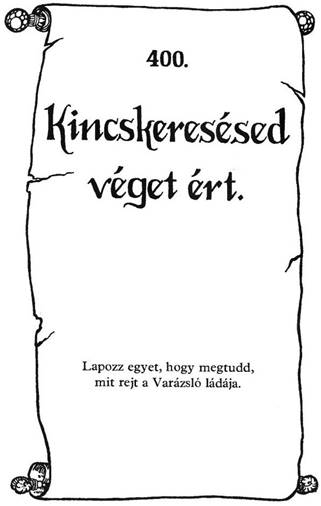
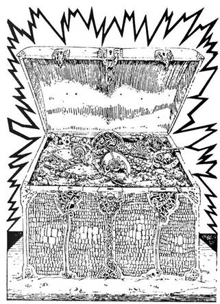
Kincskeresésed véget ért.
A Tűzhegy Varázsiója nincs többé, és mostantól tied minden kincse. Legalább ezer arany, ékszerek, gyémántok, rubinok és gyöngyök vannak a ládában. Ezek alá rejtve megleled a Varázsló bűbájos könyvét, és a lapokat forgatva rájössz, ez a kötet egymagában sokkal értékesebb, mint az összes kincs. A Tűzhegy összes titka, teremtménye a te uralmad alá került a könyv utasításai szerint.
Ez a könyv végtelen hatalmat biztosít számodra, a faluba vezető utad immár biztonságos. De ha akarod, akár itt is maradhatsz a Tűzhegy Új uraként…